Глава 2. Архитектура модели¶
В главе 1 выполнение модели анализировалось с трёх точек зрения: объёма памяти, количества вычислений и объёма считываемых данных. Нижняя граница времени оценивалась с помощью ключевых показателей аппаратного обеспечения. Такая оценка позволяет быстро исключить некоторые варианты, однако оставляет открытым вопрос: откуда берутся подставляемые значения количества вычислений и объёма данных? Формулировка «модель 8B» (суффикс B в количестве параметров означает миллиард, то есть 8B — примерно 8 миллиардов параметров) указывает лишь приблизительное количество параметров, но не объясняет, какие параметры используются для каждого токена, где хранится контекст и в каком порядке выполняются различные операции.
В этой главе мы начнём с числового представления одного токена и последовательно разберём, как после прохождения через слои сети вычисляются оценки следующего токена, а затем рассчитаем необходимые для этого объём памяти \(M\), количество вычислений \(F\) и объём чтения и записи \(R\). В графе вычислений узлы обозначают операции, а рёбра — данные, передаваемые между ними. Только разобравшись с операциями и данными графа, можно понять происхождение каждого числа в бюджете ресурсов.
Этот граф вычислений также содержит информацию, необходимую для оптимизации реализации. Из структуры модели можно определить, какие веса остаются неизменными между запросами, какие состояния многократно используются при последующей генерации, а какие результаты нужны только непосредственно следующей операции. При проектировании хранения, компиляции и планирования в последующих главах эти различия в назначении данных помогут решить, какие данные можно совместно использовать, какие необходимо хранить длительное время, а какие достаточно сохранять временно.
В этой главе рассматриваются пять типичных моделей: DeepSeek V4.1 Flash, Qwen3-8B, Qwen3.6-35B-A3B (35B в названии означает около 35 миллиардов параметров всего, а A3B — около 3 миллиардов параметров, фактически активируемых для каждого токена; далее — Qwen3.6), DeepSeek V4-Flash и Kimi K3. Выпущенная в сентябре 2026 года V4.1 Flash использует архитектуру CED для разделения обработки входных данных и генерации, а также сочетает межслойное совместное использование KV, иерархическую индексацию и Engram — модуль, который по n-грамме, то есть фрагменту из последовательных n токенов, получает дополнительное представление из таблицы. Эта модель служит новым примером того, как архитектура модели изменяет системные требования.
Вывод формул начинается с Qwen3-8B: она содержит около 8,19 миллиарда параметров и обрабатывает текст сетью из 36 слоёв. Разобрав выполнение этой плотной модели, мы затем последовательно изменим способ хранения контекста, набор параметров, используемых для каждого токена, и связи между слоями, после чего сравним пять моделей при одинаковых входных условиях.
Перед началом вывода договоримся о принятых в этой главе правилах подсчёта. При расчёте количества вычислений одна операция умножения и одна операция сложения считаются за 2 FLOPs. Для объёма памяти используются GB и GiB: \(1\ \mathrm{GB}=10^9\ \mathrm{bytes}\), \(1\ \mathrm{GiB}=2^{30}\ \mathrm{bytes}\). Каждый элемент BF16 занимает 2 байта, поэтому размер тензора в памяти получается умножением количества его элементов на 2.
2.1 Вычислительный граф и прямой проход¶
Тензор — это массив чисел, упорядоченных по одному или нескольким измерениям: вектор имеет одно измерение, а матрица — два. Модель представляет характеристики каждого токена вектором, а векторы нескольких токенов располагает по строкам матрицы. Чтобы понять требования модели к ресурсам, прежде всего необходимо разделить вычислительные узлы и зависимости данных. Узел выполняет матричное умножение или другое преобразование, а ребро показывает, что последующему узлу необходим предыдущий результат. Объём операций узла определяет вычислительные требования, тензор на ребре — объём передаваемых данных, а направление ребра указывает, какие операции должны выполняться последовательно. Для понимания процесса выполнения модели необходимо учитывать все три аспекта.
Вычислительный граф в этой главе прежде всего описывает математические операции и зависимости данных. При фактическом выполнении фреймворк передаёт эти операции программам ускорителя; одна операция может быть разбита на несколько программ, а несколько операций могут быть объединены для совместного выполнения. Ребро, представляющее тензор в вычислительном графе, означает лишь, что последующей операции нужны эти данные, но не означает, что они обязательно должны копироваться между CPU и GPU. В главе 4 объясняется, где размещаются данные, а в главе 5 — как отправляются программы и как передаются входные и выходные данные.
2.1.1 Последовательные зависимости и причинный вычислительный граф¶
Чтобы рассчитать время выполнения, сначала нужно определить, какие операции могут начинаться одновременно. Рассмотрим четыре токена и трёхслойную сеть: по горизонтальной оси отложен индекс позиции токена в последовательности, по вертикальной — номер слоя. В этой главе термин «лексема» обозначает один элемент словаря, а термин «токен» — одно её вхождение в последовательность; если одна и та же лексема встречается в последовательности несколько раз, они различаются по индексам позиций. Рекуррентная нейронная сеть (RNN) передаёт состояние предыдущей позиции токена следующей, а состояние токена удовлетворяет равенству \(h_t=f(x_t,h_{t-1})\). Здесь \(x_t\) — текущие входные данные, \(h_t\) — состояние, сохранённое после обработки текущей позиции токена, а \(f\) — преобразование с использованием весов модели. Текущий результат зависит от предыдущей позиции токена, поэтому позиции внутри одного слоя обрабатываются последовательно. Даже если все четыре входных токена уже поступили, токен с номером \(t\) должен ждать токена с номером \(t-1\).
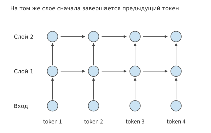
Рисунок 2-1. Зависимости в рекуррентной нейронной сети. Точки одинакового цвета обозначают вычисления для соответствующих позиций токенов, стрелки указывают на узлы, которым нужен предыдущий результат; позиции токенов в одном слое последовательно обрабатываются по горизонтали.
Transformer использует механизм внимания, позволяющий одному токену считывать информацию из других позиций; «причинность» означает, что текущей позиции токена доступна информация только о ней самой и о предшествующих позициях. Зависимости причинного Transformer устроены иначе. При вычислении некоторой позиции в слое \(l\) механизм внимания считывает представления этой и всех предшествующих позиций токенов из предыдущего слоя. Если входные токены известны и соответствующие представления предыдущего слоя уже вычислены, позиции одного слоя можно вычислять, не дожидаясь выхода предыдущего токена в этом же слое. Причинная маска определяет, к какой информации разрешён доступ каждой позиции токена, и скрывает информацию после текущей позиции. Если расположить запросы и опрашиваемые позиции токенов по осям, маска имеет треугольную форму; она ограничивает источники информации, но не требует обрабатывать все известные токены по одному. Зависимость по глубине сети сохраняется: следующий слой использует результаты текущего.
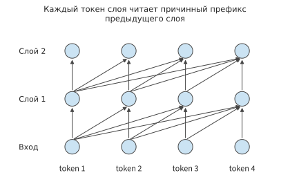
Рисунок 2-2. Межслойные зависимости причинного Transformer. Каждый запрос считывает разрешённые позиции предыдущего слоя; после завершения предыдущего слоя известные входные токены одного слоя можно вычислять параллельно.
Проследив путь по стрелкам на рисунке, можно различить два вида ожидания: RNN в текущем слое ожидает предыдущую позицию токена, а причинный Transformer в следующем слое ожидает необходимые результаты предыдущего слоя. Возможность параллельно обрабатывать известные входные данные определяется этими зависимостями, а не самим понятием «последовательность». Генерация нового токена добавляет ещё одну зависимость: входные данные следующего вызова определяются выходом текущего.
Обработка известных входных данных и пошаговая генерация — два разных вида работы. Кодировщик преобразует известные входные данные в представления, а декодировщик пошагово создаёт выходные данные на основе доступной ему информации. Современные причинные языковые модели часто используют архитектуру decoder-only. В этой главе сначала закладываются основы на примере такой архитектуры, а затем рассматривается, как V4.1 Flash перераспределяет работу по обработке входных данных и генерации с помощью архитектуры CED. При обработке известных входных данных позиции токенов в одном слое могут вычисляться параллельно; при генерации следующий вход можно сформировать лишь после определения первого выхода. Поэтому обработка входных данных продвигается по глубине сети, а генерация дополнительно создаёт последовательную зависимость между вызовами.11
Упражнение 2-1 (дополнительное): как зависимости RNN и Transformer ограничивают параллельные вычисления
Для последовательности из четырёх известных входных токенов нарисуйте вычислительные графы зависимостей трёхслойной RNN и трёхслойного причинного Transformer. Затем добавьте одну позицию генерируемого выхода и укажите, завершения какого узла необходимо дождаться перед вычислением этой позиции. Считайте, что вычисление одного токена в одном слое занимает одну единицу времени, а параллельных ресурсов достаточно. Для каждого случая определите длину наибольшей цепочки зависимостей при обработке всех известных входных данных; объясните, какие ожидания можно сократить добавлением вычислительных блоков, а какие нельзя.
2.1.2 Конфигурация модели и структура тензоров¶
Сначала подробно рассмотрим один вычислительный узел. Пусть в этом вызове проекция выполняется для \(m\) входных токенов, каждый из которых представлен вектором из \(k\) признаков. Расположив эти векторы по строкам входной матрицы \(X\), получим матрицу из \(m\) строк и \(k\) столбцов. Пусть ширина выхода равна \(n\), тогда:
Каждый элемент выхода представляет собой скалярное произведение длины \(k\), а всего выход содержит \(mn\) элементов, поэтому
\(N_W\) — количество параметров весов, а \(b_W\) — число байтов на один параметр. При удвоении числа строк \(m\) объём вычислений удваивается, а размер весов остаётся неизменным; при удвоении ширины выхода \(n\) удваиваются и количество весов, и объём вычислений. Эти два изменения соответствуют случаям, когда «одна и та же модель обрабатывает больше входных данных» и когда «слой модели становится шире». Каждую строку приведённых ниже таблиц моделей можно рассчитать по этому правилу.
Сначала рассмотрим только один путь данных Qwen3-8B. Один прямой проход — это процесс вычисления выхода из входных данных с использованием текущих весов; скрытый вектор представляет собой внутреннее представление признаков, передаваемое по сети, а его размерность показывает, сколько чисел содержит вектор каждого токена. Сеть прямого распространения (feed-forward network, FFN) отдельно преобразует признаки каждого токена; внимание выбирает и агрегирует информацию между токенами. Чередование этих двух типов операций образует слой сети.
Qwen3-8B содержит \(L=36\) слоёв, имеет скрытую размерность \(d=4096\) и промежуточную размерность FFN \(f=12288\); внимание разделяет признаки на несколько групп, каждая из которых отдельно устанавливает связи между токенами. Каждая такая группа называется головой. Здесь используются 32 головы запросов и 8 доступных им KV-голов размерностью 128 каждая; в разделе 2.1.3 они будут рассмотрены по путям запросов, ключей и значений. Словарь содержит 151936 токенов. Эмбеддинг токенов — это таблица поиска, сопоставляющая идентификаторы токенов с векторами, а выходная голова преобразует вектор последнего слоя в оценки всех токенов-кандидатов. Каждая из этих двух частей хранит собственный набор весов. В сумме параметры всех слоёв и двух словарных матриц дают модели около 8,19 миллиарда параметров.2
Прямой проход начинается с token ID. Эмбеддинг токенов извлекает для каждого ID вектор размерностью 4096, затем векторы последовательно проходят через внимание и FFN 36 слоёв и, наконец, через нормализацию и словарную проекцию, формируя logits — ещё не преобразованные в вероятности оценки токенов-кандидатов. Нормализация удерживает значения при послойных вычислениях в подходящем диапазоне. Эмбеддинг токенов выбирает строки по ID: для одного токена извлекается один вектор, а весь словарь служит постоянно размещёнными данными, к которым обращаются разные токены. Выходная словарная голова умножает скрытый вектор на словарную матрицу; при генерации только следующего токена обычно требуются лишь logits последнего входного токена.
Пусть одновременно обрабатываются \(B\) запросов одинаковой длины, каждый из которых в текущем вызове содержит \(P\) известных входных токенов. Вход проекций и FFN можно представить как \(X\in\mathbb{R}^{BP\times4096}\), где каждая строка является представлением одного токена в текущем слое, а всего имеется \(m=BP\) строк. Ключи и значения уже имеющихся токенов контекста считываются из кэша и здесь в \(m\) не входят. Если в каждый запрос добавляется лишь один токен, то \(m=B\). В первом случае легко получить матрицу с большим числом строк, а второй при небольшом batch приближается к умножению матрицы на вектор. Веса одинаковы, но формы входных данных заметно различаются.
Ниже сравниваются две формы входных данных: один запрос, обрабатывающий сразу 8192 входных токена, и запрос с 8192 уже имеющимися токенами контекста, обрабатывающий ещё один новый токен. Обозначим через \(B\) количество запросов, через \(S\) — длину уже имеющегося перед вызовом контекста, через \(P\) — длину входа текущего вызова, а через \(d\) — скрытую размерность. В первом случае \(B=1,S=0,P=8192\), во втором — \(B=1,S=8192,P=1\).
| Параметр конфигурации | Параметр Qwen3-8B | Непосредственное влияние на требования к ресурсам |
|---|---|---|
| Число слоёв \(L\) | 36 | Повторяющиеся вычисления, послойные состояния и зависимости по глубине |
| Скрытая размерность \(d\) | 4096 | Размеры входов, выходов и проекций подслоёв |
| Промежуточная размерность FFN \(f\) | 12288 | Веса и вычисления трёх матриц FFN |
| Число голов \(Q\)/KV | 32/8 | Ширина векторов запросов и представлений контекста |
| Размерность головы \(d_h\) | 128 | Скалярные произведения и ширина состояния каждой головы |
| Размер словаря \(V\) | 151936 | Размер эмбеддинга и выходной головы |
Пример 2-1: расчёт числа параметров и объёма вычислений одного слоя по размерам матриц. В Qwen3-8B ширина проекций запросов и выхода равна 4096, ширина проекций ключей и значений — 1024, а промежуточная размерность FFN — 12288. Найдите количество параметров четырёх проекций внимания и трёх матриц FFN, а также объём вычислений, необходимый для выполнения этих проекций и FFN для \(m\) токенов текущего входа. В этом слое каждому токену соответствует вектор размерностью 4096, который образует одну строку входной матрицы; \(m\) — фактическое число участвующих в текущем вычислении токенов. Если одна и та же лексема встречается дважды, она учитывается как два токена. Если имеется \(B\) запросов одинаковой длины, в каждом из которых в текущем вызове обрабатывается \(P\) токенов, то \(m=BP\). Например, для одного запроса со 128 входными токенами \(m=128\), а для восьми запросов, каждый из которых продвигается на один токен, \(m=8\).
Решение: запрос и выход используют по одной матрице \(4096\times4096\), ключ и значение — по одной матрице \(4096\times1024\), а каждая из трёх матриц FFN содержит \(4096\times12288\) параметров. Следовательно,
Длина контекста здесь ещё не использовалась: эти проекции выполняют одинаковое преобразование вектора признаков каждого токена. В следующем разделе рассматриваются вычисления внимания между запросами и контекстом, объём которых зависит от количества пар «запрос — ключ». Разделение этих двух видов работы позволяет понять, почему «увеличение числа токенов, участвующих в текущем вычислении» и «увеличение длины контекста, считываемого каждым токеном» имеют разную стоимость.
| Символ | Значение и область применения |
|---|---|
| \(B,P,S\) | Число запросов, число входных токенов на запрос в текущем вызове и длина уже имеющегося контекста |
| \(m=BP\) | Общее число токенов, участвующих в проекциях текущего вызова, то есть число строк входной матрицы; при обычном decode \(P=1\), поэтому \(m=B\) |
| \(d,f\) | Основная скрытая ширина и промежуточная ширина сети прямого распространения |
| \(n_Q,n_{\mathrm{KV}},d_h\) | Число голов запросов, число KV-голов и размерность каждой головы |
| \(N_{\mathrm{pair}}\) | Суммарное для всех запросов число допустимых причинных пар «запрос — ключ» в каждом слое, без учёта числа голов |
| \(t_e\) | Число токенов, направленных эксперту \(e\) (см. раздел 2.4); вектор признаков каждого токена занимает одну строку входной матрицы этого эксперта; \(k_{\mathrm{top}}\) — число экспертов, выбранных для каждого токена; если в процессе маршрутизации направленные экспертам токены не отбрасываются, то \(\sum_e t_e=mk_{\mathrm{top}}\) |
| \(m_{\mathrm{out}}\) | Число токенов, для которых фактически выполняется словарная проекция; если для предсказания следующего токена используется только последний токен каждого запроса, оно равно \(B\) и не совпадает с полной длиной генерируемого выхода |
При расчёте потребности всей модели в ресурсах сначала по размерам матриц каждой операции в таблице определяется объём вычислений одного вызова, а затем он умножается на число слоёв соответствующего типа. Словарная голова рассчитывается отдельно по фактическому числу выходных токенов \(m_{\mathrm{out}}\); при генерации следующего токена для каждого запроса нужны оценки только последнего токена. Нормализация, активация и табличный поиск выполняются каждый по своим правилам; далее они рассматриваются отдельно по ходу движения данных.
2.1.3 Вычисление внимания и позиционное кодирование¶
Сначала проследим вычисления для одного токена. Из скрытого вектора этого токена модель создаёт три представления: запрос \(Q\) формулирует, «какая информация сейчас нужна», ключ \(K\) используется для расчёта оценки соответствия запросу, а значение \(V\) содержит информацию, которая после выбора агрегируется в выходе. Все три представления создаются из входных данных одного токена с помощью разных матриц весов. Линейная проекция и есть такое матричное умножение: оно преобразует входные признаки в другую систему координат.
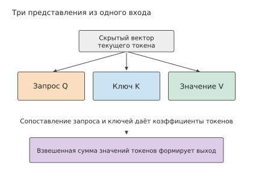
Рисунок 2-3. Входные данные одного токена посредством разных проекций преобразуются в запрос, ключ и значение. Внимание сначала использует запросы и ключи для определения связей между токенами, а затем по этим связям агрегирует значения.
При математическом обозначении с умножением справа вход \(X\) умножается на три матрицы весов с получением \(Q\), \(K\) и \(V\). Общая ширина \(Q\) равна \(32\times 128=4096\), а общая ширина \(K\) и \(V\) — по \(8\times 128=1024\). Следовательно, размер \(W_q\) равен \([4096,4096]\), а размеры \(W_k\) и \(W_v\) — по \([4096,1024]\). В коде веса линейного слоя часто хранятся в форме \((d_{\mathrm{out}},d_{\mathrm{in}})\); после перехода к математическому обозначению с умножением справа входная ширина указывается первой, а выходная — второй, что позволяет построчно сопоставить их с приведённой ниже таблицей.
Описанные проекции создали \(Q\), \(K\) и \(V\), но текущая позиция токена ещё не обменивалась информацией с контекстом. Далее \(Q\) разделяется на 32 головы, а \(K\) и \(V\) — на 8 голов. Каждая группа из четырёх голов \(Q\) совместно использует одну KV-голову. Для одной головы \(Q\) вычисляется скалярное произведение вектора запроса с \(K\) разрешённых для доступа позиций. Полученное произведение делится на квадратный корень из ширины головы, чтобы численный масштаб оценок не рос чрезмерно с увеличением ширины головы, после чего позиции будущих токенов маскируются. Softmax преобразует оценки \(s_j\) разрешённых позиций в положительные числа и нормализует их, формируя коэффициенты \(a_j=e^{s_j}/\sum_i e^{s_i}\); сумма этих коэффициентов равна единице, и они определяют вклад каждого токена контекста. Под «весами внимания» здесь понимаются вычисленные для текущего входа коэффициенты, а не параметры модели, сохранённые после обучения. Затем с этими весами рассчитывается взвешенная сумма \(V\). Результаты всех голов \(Q\) объединяются и с помощью выходной проекции \(W_o\) размером \([4096,4096]\) снова преобразуются в скрытый вектор.
В матричной форме вычисление одной головы записывается так:
\(A\) — веса контекстных токенов для каждого запроса, \(\mathcal M\) — причинная маска, а \(d_h\) — размерность головы. Скалярное произведение определяет, какие позиции связаны с текущим запросом, Softmax преобразует оценки в весовые коэффициенты, после чего с помощью этих коэффициентов агрегируются векторы значений. В Qwen3 перед вычислением скалярного произведения также выполняются нормализация запросов и ключей (QK Norm) и вращательное позиционное кодирование (Rotary Position Embedding, RoPE): первое регулирует численный масштаб запросов и ключей каждой головы, а второе с помощью зависящего от позиции вращения включает в скалярное произведение информацию об относительных позициях.
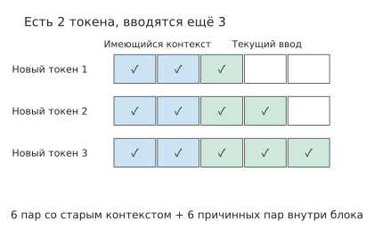
Рисунок 2-4. Два сегмента контекста образуют прямоугольник и треугольник. Синим показано, как три новых токена считывают два старых токена, зелёным — причинный доступ внутри нового входа, а пустыми остаются замаскированные позиции будущих токенов. Каждая цветная ячейка обозначает одну пару «запрос — ключ»; по горизонтальной оси расположены считываемые токены, по вертикальной — токены-запросы нового входа.
Теперь рассчитаем количество скалярных произведений. При наличии \(P\) новых входных токенов и \(S\) уже имеющихся токенов контекста \(i\)-му новому токену доступны \(S+i\) токенов, где \(i=1,\ldots,P\). Суммирование числа токенов контекста, доступных каждому запросу, даёт прямоугольник и треугольник:
Для каждой пары запроса и токена контекста скалярное произведение \(QK^{\mathsf T}\) одной головы \(Q\) требует примерно \(2d_h\) FLOPs, а последующий вклад \(AV\) — ещё примерно \(2d_h\) FLOPs. Суммарный объём полезных матричных вычислений \(QK^{\mathsf T}\) и \(AV\) для всех голов \(Q\) равен:
При prefill без предварительно закэшированного контекста удвоение длины последовательности удваивает число входных строк проекций, а число пар «запрос — ключ» для полного внимания увеличивается примерно в четыре раза, поскольку новые токены также должны взаимодействовать с предыдущим контекстом. Эти пары «запрос — ключ» можно вычислять двумя распространёнными способами: полное прямоугольное умножение сначала создаёт все оценки, после чего маскируется верхний треугольник, а причинное блочное вычисление пропускает верхний треугольник. Блочная обработка также позволяет объединить вычисление оценок, нормализацию и агрегацию \(V\), чтобы оценки освобождались сразу после использования во внутрикристальной памяти. В главе 5 этот поток данных рассматривается с точки зрения сокращения чтения и записи промежуточных результатов в видеопамять.
Таким образом, сохранение постоянного значения \(BP\) сохраняет лишь число строк проекций, но не объём взаимодействия с контекстом. Например, если один длинный вход разделить на два независимых коротких, исчезнут пары «запрос — ключ», ранее пересекавшие границу разделения. И наоборот, добавление контекста перед текущим входом одного запроса увеличивает число скалярных произведений для каждого нового токена, но не меняет число строк входных проекций.
2.1.4 Сеть прямого распространения и объём вычислений прямого прохода¶
Внимание обеспечивает обмен информацией между разными токенами, а FFN выполняет нелинейное преобразование признаков каждого токена. SwiGLU — это вентильная структура сети прямого распространения: одна ветвь преобразует входные признаки, а другая создаёт для неё поэлементные регулирующие значения. В SwiGLU используется функция активации SiLU \(\operatorname{SiLU}(x)=x/(1+e^{-x})\), которая посредством нелинейного преобразования изменяет способ комбинирования признаков. Qwen3-8B использует эту структуру: вход отдельно проходит через две повышающие размерность проекции gate и up, затем ветвь gate после SiLU поэлементно умножается на ветвь up, после чего проекция down снижает размерность обратно до скрытой:
Здесь \(\odot\) обозначает поэлементное умножение; gate — вентильная ветвь, up — ветвь повышения размерности, а down — проекция понижения размерности. Создаваемые ими промежуточные векторы называются активациями. gate и up увеличивают размерность каждой строки с \(d\) до \(f\), а down снова уменьшает её до \(d\). Поэтому три матрицы содержат в сумме \(3df\) параметров, а обработка векторов признаков \(m\) токенов требует \(6mdf\) FLOPs. Для Qwen3-8B \(d=4096,f=12288\), поэтому FFN содержит около 151 миллиона параметров, а её веса BF16 занимают 288 MiB. Более широким активациям после повышения размерности также требуется временное пространство, но хранить их нужно только во время соответствующих вычислений.
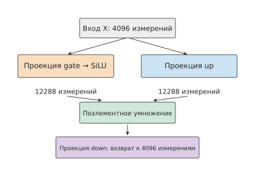
Рисунок 2-5. Две повышающие размерность ветви SwiGLU. После SiLU ветвь gate регулирует соответствующие элементы up, затем проекция down уменьшает размерность произведения до основной.
Сравним два типа проекций: проекции QKV и выходная проекция внимания содержат в сумме около 41,94 миллиона параметров. После добавления примерно 151 миллиона параметров FFN доля FFN составляет около 78% параметров этих основных проекций, поэтому при коротком контексте значительная часть вычислений приходится на три матрицы FFN. С увеличением входа объём вычислений FFN растёт линейно с числом токенов, а объём вычислений полного внимания — пропорционально \(P(P+1)/2\). Скорости роста различаются, поэтому доли вычислений отдельных частей меняются с длиной контекста.
Помимо матричных преобразований, внутри слоя имеются связи между подслоями. Остаточная связь сохраняет вход подслоя и после завершения его преобразования поэлементно складывает его с выходом. Таким образом, один путь выполняет новое преобразование, а другой напрямую передаёт уже имеющееся представление. Ниже внимание, сеть прямого распространения и две остаточные связи объединены в полный слой.
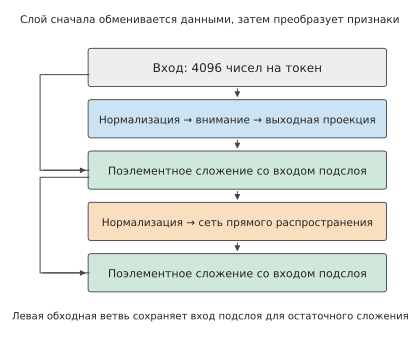
Рисунок 2-6. Структура одного слоя Qwen3-8B. Сначала выполняется подслой внимания, затем подслой сети прямого распространения; остаточные связи слева сохраняют входы подслоёв и затем складывают их с результатами преобразований.
Таблица 2-1. Модули одного слоя Qwen3-8B и выходной интерфейс
Строки внимания и сети прямого распространения суммируются по 36 основным слоям; эмбеддинг токенов считывает из словаря строку, соответствующую идентификатору токена, и не рассчитывается как одно умножение словарной матрицы (GEMM, общее умножение матриц). \(K\) и \(V\) внимания имеют размерность лишь 1024, тогда как размерность запроса остаётся равной 4096.
Вход модели
| Модуль и назначение | Вход → выход (число строк × ширина) | Матрица весов (входная ширина × выходная ширина) | Матричные FLOPs | Число слоёв/вызовов |
|---|---|---|---|---|
| Получение строки эмбеддинга токена | \(m\) ID → \(m\times4096\) | Таблица поиска \(151936\times4096\) | 0; доступ к строкам учитывается отдельно | 1 |
Внимание
| Модуль и назначение | Вход → выход (число строк × ширина) | Матрица весов (входная ширина × выходная ширина) | Матричные FLOPs | Число слоёв/вызовов |
|---|---|---|---|---|
| Проекция \(Q\): формирование запросов | \(m\times4096\to m\times4096\) | \(4096\times4096\) | \(2\times m\times4096\times4096\) | 36 |
| Проекции \(K\), \(V\): формирование повторно используемого контекста | \(m\times4096\to m\times1024\) | \(4096\times1024\), всего 2 | \(2\times 2\times m\times4096\times1024\) | 36 |
| \(QK^{\mathsf T}\) и \(AV\): агрегация контекста по содержимому | 32 головы запросов размерностью 128 каждая | Нет дополнительных весов проекций | \(4\times32\times128\times N_{\mathrm{pair}}\) | 36 |
| Выходная проекция: объединение голов | \(m\times4096\to m\times4096\) | \(4096\times4096\) | \(2\times m\times4096\times4096\) | 36 |
Сеть прямого распространения и связи
| Модуль и назначение | Вход → выход (число строк × ширина) | Матрица весов (входная ширина × выходная ширина) | Матричные FLOPs | Число слоёв/вызовов |
|---|---|---|---|---|
| SwiGLU: преобразование признаков каждого токена | \(m\times4096\to m\times12288\to m\times4096\) | Две матрицы \(4096\times12288\); одна матрица \(12288\times4096\) | \(6\times m\times4096\times12288\) | 36 |
| Нормализация, RoPE, активация и остаточная связь | Сохранение или поэлементное преобразование указанных тензоров | Векторы нормализации и прочее | Поэлементные вычисления | 36 |
Выходной интерфейс
| Модуль и назначение | Вход → выход (число строк × ширина) | Матрица весов (входная ширина × выходная ширина) | Матричные FLOPs | Число слоёв/вызовов |
|---|---|---|---|---|
| Словарная голова: преобразование в оценки токенов (один раз в конце всей модели) | \(m_{\mathrm{out}}\times4096\to m_{\mathrm{out}}\times151936\) | \(4096\times151936\) | \(2\times m_{\mathrm{out}}\times4096\times151936\) | 1 |
В таблице показаны два вида роста: работа проекций и FFN растёт с \(m\), а взаимодействие с контекстом — с \(N_{\mathrm{pair}}\). Три крупные проекции FFN объясняют, почему при коротком контексте на неё приходится значительная доля вычислений; по мере удлинения контекста доля взаимодействия с ним постепенно увеличивается.
Сложив линейные преобразования и взаимодействие с контекстом в каждом слое, а затем добавив словарную голову, получим основной объём матричных вычислений Qwen3-8B:
Первая часть выражения растёт с числом входных строк, вторая — с числом пар «запрос — ключ», а последняя — с числом токенов, для которых фактически выполняется словарная проекция. Для входа из 8192 токенов при расчёте внимания по допустимым причинным парам «запрос — ключ» и обработке словарной головой только последнего токена требуется в сумме 133,6 TFLOPs; если уже имеется 8192 токена контекста и добавляется ещё один токен, требуется в сумме 20,0 GFLOPs.12
При prefill одновременно обрабатываются 8192 входных токена, каждый из которых должен пройти через проекции и FFN. При decode эти операции выполняются только для нового токена, а \(K\) и \(V\) старых токенов считываются из кэша. Таким образом, кэш устраняет повторное вычисление проекций и FFN старых токенов, однако внимание между текущим запросом и контекстом всё равно должно вычисляться. В следующем разделе рассчитываются ёмкость этого кэша и объём доступа к нему.
Упражнение 2-2 (основное): почему при одинаковом числе входных строк объём вычислений внимания различается
Используя таблицу 2-1, для \(B=4,S=4096,P=1024\) отдельно рассчитайте FLOPs, необходимые для проекций и FFN, допустимого причинного внимания и словарной проекции последнего токена каждой последовательности. Сохранив \(BP=4096\), измените параметры на \(B=1,S=4096,P=4096\): сначала предскажите, какие величины останутся одинаковыми, а затем вычислите различия. Наконец, на примере одного запроса с входом длиной 8K сравните полную обработку входа и повторное использование префикса. При повторном использовании сохраните KV первых 6144 токенов и обрабатывайте только 2048 новых токенов. Определите, какую долю матричных вычислений экономит второй способ относительно полной обработки входа.
2.2 Расчёт потребления ресурсов при авторегрессионной генерации¶
Чтобы рассчитать ресурсы, необходимые для генерации полного ответа, помимо числа операций за один прямой проход нужно знать, сколько раз вызывается модель и как долго хранится состояние. Один и тот же набор весов может использоваться сотни раз в рамках одного запроса, а KV-кэш при этом считывается и растёт. Поэтому итоговое число сохраняемых байтов и совокупное число байтов, к которым выполнялся доступ, могут различаться на несколько порядков.
2.2.1 Prefill, decode и повторное использование состояния¶
На этапе prefill модель получает известную входную последовательность и может одновременно вычислить представления нескольких токенов. После выбора первого выходного токена по logits последнего входного токена начинается этап decode: при следующем вызове этот токен передаётся как новый вход, модель выдаёт следующий выходной токен, и последовательность постепенно расширяется. На обоих этапах используется одна и та же модель, но на первом известно несколько входных токенов, а на втором при обычной последовательной генерации каждый запрос пополняется лишь одним токеном за вызов.
Если при генерации каждого токена заново передавать модели весь префикс, проекции и FFN для прежних токенов будут вычисляться повторно. В причинной модели прежние токены не могут видеть добавленные позднее; если веса, индексы позиций токенов и связанные условия вычислений не изменились, полученные для прежних токенов \(K\) и \(V\) можно сохранить. Последующие запросы внимания считывают эти контекстные \(K\) и \(V\) и дополняют их новыми \(K\) и \(V\) для позиции текущего токена, что позволяет избежать значительной части повторных вычислений для прежних токенов.
Кэширование заменяет «повторное вычисление представлений прежних токенов» на «сохранение и обращение к состоянию прежних токенов». Для будущей позиции токена будет вычислен собственный \(Q\), который используется для оценки \(K\) прежних токенов, после чего \(V\) агрегируются с полученными весами. Поэтому длительно сохраняются именно \(K\) и \(V\). Прежний запрос внимания уже выполнил свою задачу, а на следующем шаге используется новый запрос. В главе 8 подробнее рассматривается совместное использование этих состояний разными запросами.
Для Qwen3-8B объём BF16 KV-кэша на каждый токен контекста составляет:
Первый множитель 2 соответствует ключам и значениям; на каждом из \(L\) слоёв сохраняются \(n_{\mathrm{KV}}\) групп векторов шириной \(d_h\), а каждый элемент занимает \(b_{\mathrm{KV}}\) байт. Следовательно, для хранения \(H\) токенов контекста требуется \(M_{\mathrm{KV}}=c_{\mathrm{KV}}H\). Для Qwen3-8B при \(H=8192\) это соответствует 1.125 GiB, а обработка ещё одного нового входного токена добавляет 144 KiB. Если число слоёв или KV-голов уменьшить вдвое, скорость роста также уменьшится вдвое; при увеличении батча для каждого независимого запроса добавляется собственный контекст.14
2.2.2 Потребление памяти и объём доступа к данным¶
KV-кэш хранит уже вычисленные результаты и избавляет от повторных вычислений при последующей генерации. Чтобы проанализировать сэкономленные вычисления и дополнительные затраты на хранение, разделим данные по назначению и жизненному циклу на три категории: веса, состояние контекста и временные данные.
| Категория данных | Хранение и повторное использование | Основные рассчитываемые в этой главе показатели |
|---|---|---|
| Веса | Обычно остаются неизменными между вызовами | Резидентный объём в байтах, набор используемых весов, повторное использование внутри батча |
| Состояние контекста | Сохраняется для запроса и непрерывно дополняется или обновляется | Фактически занимаемый объём, объём чтения и записи на каждом шаге, вычисления для обновления |
| Временные данные | Создаются соответствующим оператором или этапом и освобождаются после использования | Размеры тензоров, объём данных, прошедших через соответствующий интерфейс хранения, одновременно сохраняемые части |
Сначала рассмотрим веса. Все веса Qwen3-8B в BF16 занимают приблизительно 16.38 GB, то есть 15.26 GiB. После загрузки модели эти данные многократно используются разными запросами. Во время одного прямого прохода строки эмбеддингов выбираются по ID токенов, проекции внутри слоёв и FFN используют соответствующие матрицы, а выходная голова словаря вычисляет итоговые оценки. Поэтому набор используемых весов определяется конкретными операциями вычислительного графа.
При умножении матриц \([m,d]\times[d,f]\) каждая строка входных данных использует одну и ту же матрицу весов. После загрузки блока весов во внутрикристальную память его можно последовательно применять к нескольким строкам входных данных, благодаря чему однократно считанные данные участвуют в большем числе операций умножения и сложения. При увеличении числа обрабатываемых строк \(m\) объём вычислений растёт, а размер всей матрицы остаётся неизменным. В главе 5 подробнее объясняется, как объём внутрикристальной памяти и разбиение на блоки определяют число повторных использований одного набора весов.
Состояние контекста уже рассчитано в разделе 2.2.1; объём памяти для временных данных зависит от того, какие тензоры существуют одновременно. После освобождения буфера предыдущего слоя следующий слой может повторно использовать ту же область памяти; слияние операторов, то есть объединение нескольких соседних операций в одну программу, также позволяет хранить часть промежуточных значений только в регистрах или внутрикристальной памяти. Поэтому при расчёте объёма чтения и записи необходимо учитывать каждое обращение, а при расчёте пикового потребления памяти — определить тензоры, которые всё ещё должны храниться одновременно. В главе 5 это будет разобрано на конкретных программах.
Объём хранения зависит от того, какие данные необходимо сохранять в определённый момент, а объём доступа — от того, сколько раз данные были прочитаны и записаны в процессе выполнения. Например, если за один шаг decode весь прежний контекст считывается один раз, логический объём чтения равен \(c_{\mathrm{KV}}H\); при последовательном выполнении нескольких шагов эти значения нужно суммировать. Только определив, через какой уровень хранения фактически проходят эти обращения, можно разделить соответствующее \(R\) на пропускную способность данного интерфейса.
Пример 2-2. Когда после увеличения батча объём чтения контекста превышает объём чтения весов? Qwen3-8B один раз за батч считывает необходимые общие веса объёмом около 15.14 GB; строки эмбеддингов, выбираемые отдельно для каждого запроса, учитываются дополнительно. Контекст каждого запроса длиной 8K в BF16 занимает 1.125 GiB. Предположим, что запросы независимы и прежний контекст каждого из них считывается один раз.
Решение: обозначим объём чтения общих весов на батч как \(R_W\). Поскольку контексты запросов независимы, их совокупный объём чтения равен \(Bc_{\mathrm{KV}}H\). Эти величины равны при
Подставив \(R_W=15{,}136{,}811{,}008\) байт и \(c_{\mathrm{KV}}=147456\) байт, получим, что при \(H=8192\) минимальный целочисленный размер батча равен 13, а при \(H=2048\) — 51. Если сократить длину контекста до четверти исходной, число запросов, необходимое для превышения объёмом чтения контекста объёма чтения весов, увеличится приблизительно в четыре раза. Чем длиннее контекст, тем раньше ограничивается выигрыш от повторного использования весов внутри батча, поскольку каждый новый запрос добавляет чтение отдельного контекста.13
Если проследить путь данных из главы 1, при загрузке веса переносятся из хранилища в видеопамять GPU, а во время выполнения необходимые веса передаются вычислительным блокам. KV-кэш и межслойные активации также могут храниться и использоваться внутри ускорителя. Поэтому один и тот же логический доступ может остаться внутри кристалла, пройти через HBM либо потребовать передачи между ускорителями; в главе 4 отдельно рассматриваются ёмкость хранилищ и пропускная способность этих путей передачи.
2.2.3 Объём вычислений и чтения-записи состояния при генерации полного ответа¶
Для получения полного ответа выполняется множество последовательных шагов, во время которых один и тот же контекст многократно считывается. Рассмотрим один обычный запрос с последовательной генерацией: \(B=1\), длина восстановленного префикса равна \(S\), текущий вход содержит \(P\ge1\) токенов, а итоговый ответ — \(G\ge1\) токенов. Пусть \(H=S+P\). Этап prefill обрабатывает новый вход и создаёт первый выходной токен, после чего выполняется \(n_d=G-1\) шагов decode. Последний возвращённый токен ещё не был повторно передан модели, поэтому к концу запроса KV для него автоматически не сохраняется.
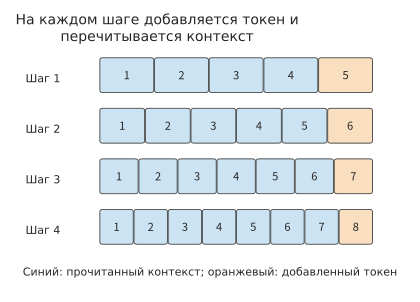
Рисунок 2-7. Чтение и запись контекста при четырёх шагах генерации. На каждом шаге считываются отмеченные синим существующие позиции, после чего добавляется один новый токен, отмеченный оранжевым; исходный контекст на схеме состоит из 4 токенов, а после четырёх шагов сохраняется всего 8.
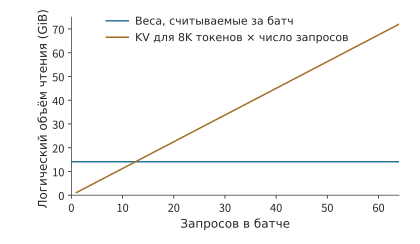
Рисунок 2-8. Основные веса проекций совместно считываются запросами одного батча, но каждый запрос имеет собственный контекст. На схеме длина контекста каждого запроса зафиксирована на уровне 8K; отдельно суммируются логические объёмы чтения общих весов и независимых KV-кэшей. Веса учитываются как однократно считанные для всего батча decode; для KV суммируется состояние контекста, считываемое на этом шаге каждым независимым запросом.
Каждая строка на рисунке 2-7 содержит на один закрашенный квадрат больше предыдущей: добавленная ранее позиция теперь также входит в контекст. Перед выполнением \(j\)-го шага decode, где нумерация \(j\) начинается с 0, длина контекста равна \(H+j\). Поэтому, если на каждом шаге decode прежний контекст считывается один раз, совокупный объём чтения равен:
Размер состояния, добавленного на этапе decode, равен \(c_{\mathrm{KV}}n_d\); если сохраняется весь контекст, итоговый объём действительного KV-кэша составляет \(c_{\mathrm{KV}}(H+n_d)\). Во весь добавленный в рамках текущего запроса KV-кэш также следует включить объём \(c_{\mathrm{KV}}P\), записанный на этапе prefill. Восстановление и передача существующего префикса учитываются отдельно. Каждый член суммы соответствует контексту, существующему в начале очередного шага decode: появившиеся раньше позиции участвуют в большем числе последующих запросов внимания, а появившиеся позже — в меньшем.
Пример 2-3. Почему при пошаговой генерации совокупный объём чтения KV-кэша значительно превышает объём его хранения? Найдите размер KV-кэша, сохраняемого к концу запроса, и общий объём чтения существующего KV-кэша во время генерации.
Решение: примем \(S=0\), \(P=8192\), \(G=1025\), тогда \(n_d=1024\), а совокупное число чтений KV для токенов контекста за весь процесс составит 8,912,384. KV-кэш каждого токена занимает 144 KiB, поэтому совокупный объём чтения равен приблизительно 1224 GiB. Во время генерации добавляется лишь 144 MiB KV-кэша, а к завершению сохраняется в общей сложности около 1.27 GiB. Совокупный объём чтения почти в тысячу раз превышает итоговый объём хранения, поскольку каждый токен, уже вошедший в контекст, повторно считывается при каждом последующем шаге decode; в этом примере большую часть контекста составляют 8192 входных токена, записанных на этапе prefill.
Эта последовательность вызовов также определяет общий объём вычислений. Линейные проекции и FFN на каждом шаге decode обрабатывают одну строку, а объём взаимодействия с контекстом растёт вместе с \(H+j\). Если фиксированный объём матричных вычислений на каждом шаге равен \(F_0\), а объём вычислений для взаимодействия с каждым токеном контекста — \(a\), то
При увеличении длины ответа совокупный объём фиксированной части работы каждого шага линейно растёт с \(n_d\), а пополняющийся во время генерации контекст приводит к квадратичному росту части совокупного объёма вычислений относительно числа шагов генерации. При возврате одного токена \(G=1\) и \(n_d=0\), поэтому выполняется только prefill; этот частный случай также показывает, почему полный ответ включает \(G-1\) последующих шагов decode.
На рисунке 2-7 объём чтения суммируется по шагам генерации, а на рисунке 2-8 — по числу запросов. Ёмкости состояний и объёмы доступа к контексту нескольких независимых запросов складываются, тогда как веса внутри батча используются совместно. Если длины различаются, для каждого запроса следует отдельно подставить его значения \(H\) и \(n_d\): чем длиннее выход, тем больше раз считывается существующий контекст; чем длиннее вход, тем больший контекст необходимо прочитать при первом шаге decode. Для реального диалога можно сначала восстановить эту цепочку вызовов по длине входа на каждом ходе, попаданиям в кэш и числу возвращённых токенов; конкретный пример подстановки приведён в разделе Расчёт длины сохранённого чата.
Упражнение 2-3 (расширенное). Как растут ёмкость KV-кэша и совокупный объём чтения при увеличении длины ответа
Для Qwen3-8B при \(B=1,S=0,P=8192\) рассмотрите возврат соответственно \(G=513\) и \(G=1025\) токенов. Найдите число последующих шагов decode, итоговый размер KV-кэша и совокупный объём чтения прежнего контекста. Объясните, почему при почти двукратном увеличении числа выходных токенов объём KV-кэша, добавленного на этапе генерации, итоговый общий объём KV-кэша и совокупный объём чтения растут в разных пропорциях. Затем уменьшите разрядность KV-кэша вдвое и укажите, какие из этих трёх величин также уменьшатся вдвое.
2.3 Представление состояния контекста и механизм доступа¶
Продолжая генерацию, модель должна использовать уже прочитанное содержимое. Сначала сравним два способа ведения записей: при первом для каждой страницы сохраняется отдельная запись, которую можно получить при необходимости; при втором сохраняется только одна сводка фиксированной длины, переписываемая с поступлением нового содержимого. В первом случае объём записей растёт вместе с историей, во втором остаётся постоянным, однако нельзя гарантировать, что удастся извлечь все подробности каждого токена.
В применении к моделям один класс механизмов сохраняет ключ и значение для каждой позиции токена, а рекуррентное состояние конечного размера сводит вклад истории в состояние фиксированного размера. Как записи для каждого токена, так и рекуррентные сводки хранятся в виде числовых векторов или матриц. Такие представления, сохраняемые после обработки контекста моделью для повторного использования в последующих вычислениях, называются состоянием контекста. Длина контекста измеряется числом токенов, а ёмкость состояния — фактическим числом сохранённых байтов.
При сравнении этих механизмов сначала следует определить, что сохранилось от истории, а затем — как на новом шаге извлекается необходимая информация. Можно представлять каждый токен меньшим числом измерений, напрямую обращаться только к недавним позициям, объединять несколько позиций в меньшее число записей либо сначала отбирать записи, а затем считывать их. Другой класс механизмов непрерывно обновляет состояние фиксированного размера, из которого запрос получает результат. Эти подходы по-разному изменяют ширину представления, число записей и способ доступа; экономию на хранении и чтении необходимо рассчитывать вместе с дополнительными затратами на отбор, сжатие и обновление.
2.3.1 Многоголовое внимание и совместное использование KV¶
Самый прямой способ сократить объём данных, сохраняемых для каждого токена, — уменьшить количество сохраняемых для него наборов \(K\), \(V\). Многоголовое внимание позволяет разным головам запросов независимо изучать связи в контексте. В многоголовом внимании (Multi-Head Attention, MHA) каждой голове \(Q\) соответствуют собственные головы \(K\), \(V\); во внимании с несколькими запросами (Multi-Query Attention, MQA) все головы \(Q\) используют один общий набор \(K\), \(V\); во внимании с группированными запросами (Grouped-Query Attention, GQA) головы \(Q\) разделяются на группы, каждая из которых использует общий набор \(K\), \(V\). При совместном использовании уменьшается количество наборов \(K\), \(V\), которые требуется хранить для каждого токена контекста, но число токенов контекста остаётся неизменным.
Рассмотрим в качестве примера один слой всего с четырьмя головами запросов. В MHA для каждой из четырёх голов запросов хранится отдельный набор \(K\), \(V\); в GQA первые две головы запросов могут совместно использовать первый набор \(K\), \(V\), а последние две — второй; в MQA все четыре головы запросов используют один общий набор. При одинаковых длине контекста и ширине головы количество сохраняемых наборов KV составляет соответственно четыре, два и один. Таким образом, в этом примере GQA вдвое сокращает объём памяти для контекста. Четыре головы запросов по-прежнему могут вычислять четыре разных набора оценок для одного и того же фрагмента контекста — именно этим «совместное использование представления контекста» отличается от «объединения запросов».
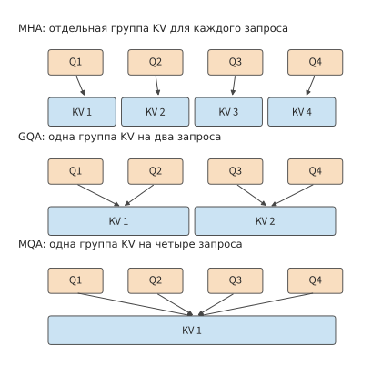
Рисунок 2-9. При фиксированных четырёх головах запросов KV сохраняется отдельно для каждой головы, каждой группы либо для всех запросов. Линии показывают отношения использования; после совместного использования контекста каждый запрос по-прежнему формирует собственные оценки и выходные данные.
Qwen3-8B использует этот способ совместного доступа: каждые четыре головы запросов используют одну общую группу KV; всего предусмотрено 32 головы запросов и 8 голов KV. Если сохранять KV отдельно для каждой головы запросов, требуемая ёмкость была бы в четыре раза больше, чем при текущей конфигурации; если бы все запросы использовали одну общую группу, она составляла бы одну восьмую от текущей. В фактической конфигурации GQA для хранения 8192 токенов требуется 1.125 GiB. На диаграмме ёмкости в конце этого раздела зафиксированы длина контекста и ширина головы, а изменяется только количество групп KV, поэтому соотношение высот столбцов непосредственно отражает степень совместного использования.
Совместное использование \(K\), \(V\) изменяет запрашиваемые данные, однако 32 головы \(Q\) по-прежнему раздельно вычисляют оценки и взвешенные выходные данные. Поэтому объём проекций и хранения KV сокращается пропорционально количеству групп, тогда как взаимодействия \(QK^{\mathsf T}\) и \(AV\) по-прежнему суммируются по числу голов запросов. Однократно считанные \(K\), \(V\) также могут использоваться несколькими головами запросов одной группы, благодаря чему при фактических вычислениях одни и те же данные используются повторно.
Изменение потребления ресурсов можно непосредственно предсказать по количеству групп. Если вдвое уменьшить \(n_{\mathrm{KV}}\), вдвое сократятся как число параметров проекций ключей и значений, так и ёмкость состояния контекста; число голов запросов \(n_Q\) останется неизменным, поэтому объём вычислений при взаимодействии запросов с контекстом по-прежнему будет суммироваться по исходному числу голов.
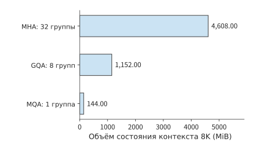
Рисунок 2-10. Число слоёв Qwen, ширина головы, 8192 токена контекста и BF16 зафиксированы; изменяется только количество групп KV. Фактическая модель использует GQA; два остальных столбца представляют структурные варианты для анализа степени совместного использования.
Совместное использование KV также показывает, что инфраструктурные ограничения влияют на архитектуру модели. В исходной статье о MQA непосредственной мотивацией названы затраты пропускной способности памяти при инкрементальном инференсе; GQA, в свою очередь, ищет компромисс между качеством MHA и скоростью MQA.27 Уменьшение числа голов KV не только изменяет отношения внимания, которые способна выражать модель, но и сокращает объём состояния, которое сервер должен хранить и считывать.
2.3.2 Сжатие скрытых переменных и пути выполнения MLA¶
GQA и MQA экономят память за счёт уменьшения числа групп KV, а многоголовое внимание со скрытыми переменными (Multi-head Latent Attention, MLA) — за счёт уменьшения размерности представления контекста. Сначала входные данные можно спроецировать в низкоразмерную скрытую переменную \(c\), а затем с помощью повышающей проекции получить \(K\) и \(V\), используемые для вычисления внимания. В процессе обучения модель осваивает эти низкоразмерные представления и повышающую проекцию, а при генерации сохраняет контекст в форме \(c\).
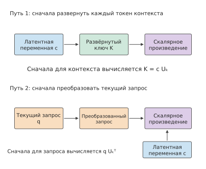
Рис. 2-11. Два пути вычисления различаются расположением повышающей проекции. Развёрнутый путь сначала восстанавливает ключи контекста, а компактный сначала преобразует текущий запрос, после чего напрямую считывает скрытые переменные; благодаря ассоциативности соответствующее скалярное произведение можно вычислять в обоих порядках.
Основание для сохранения только скрытых переменных выглядит следующим образом. Пусть повышающая проекция ключей имеет вид \(U_k\), скрытые переменные контекста образуют по строкам матрицу \(c\), а развёрнутые ключи имеют вид \(K=cU_k\). Ассоциативность умножения матриц даёт
В левой части ключ сначала восстанавливается для каждого токена контекста, а в правой сначала преобразуется текущий запрос. Для одного нового запроса в правой части достаточно однократно преобразовать запрос, а затем напрямую вычислить его скалярное произведение со скрытыми переменными. Векторы значений также можно подвергнуть повышающей проекции после взвешенного суммирования: сначала суммировать низкоразмерные векторы, а затем восстановить размерность выхода. Таким образом, повышение размерности, ранее выполнявшееся для каждого токена контекста, теперь выполняется для текущего запроса и результата суммирования.
В этой главе в качестве примера используется Gated MLA (многоголовое внимание со скрытыми переменными и гейтами) из Kimi K3; гейты регулируют выход внимания с помощью обучаемых коэффициентов. Компактный путь сохраняет 512-мерную скрытую переменную и дополнительную 64-мерную ветвь, участвующую в скалярном произведении \(QK^{\mathsf T}\). Все слои MLA в Kimi K3 используют NoPE (No Position Encoding): к запросам и ключам не применяется RoPE, а позиционную информацию обеспечивают рекуррентные гейты и затухание в слоях KDA (раздел 2.3.4); эталонная реализация всё равно проецирует и кэширует эту 64-мерную ветвь, но не применяет к ней вращение, поэтому для каждого токена сохраняется \(512+64\) измерений. Для 24 слоёв MLA, контекста из 8192 токенов и BF16 объём хранения составляет \(24\times8192\times(512+64)\times2\), то есть 216 MiB.
В развёрнутом кэше скрытые переменные сначала восстанавливаются в \(K\) и \(V\) каждой головы, после чего эти векторы сохраняются; для тех же 8192 токенов требуется около 11,25 GiB. В компактном кэше сохраняются скрытые переменные до повышающей проекции. Таким образом, различие в объёме обусловлено тем, с какой стороны линейного преобразования расположен кэш: компактный кэш на каждом шаге преобразует текущий запрос, а развёрнутый кэш напрямую считывает векторы контекста каждой головы.3
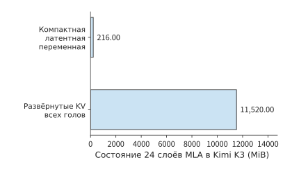
Рис. 2-12. Два объёма хранения для 24 слоёв MLA в Kimi K3 при одинаковом контексте 8K и BF16. Компактный путь сохраняет представления до повышающей проекции, а развёрнутый — ключи и значения каждой головы.
Это преобразование уменьшает ширину представления каждого токена контекста, однако для каждого токена по-прежнему необходимо сохранять один вектор скрытой переменной. Поэтому объём хранения и число операций скалярного произведения продолжают расти вместе с длиной контекста. Чем длиннее контекст, тем существеннее экономия объёма чтения благодаря компактному представлению; чем короче контекст, тем выше доля затрат на само преобразование запроса.
2.3.3 Локальное окно, сжатие контекста и разреженный индекс¶
Предположим, модель уже прочитала длинный текст и теперь должна обработать новый токен. Модель может напрямую прочитать ближайший фрагмент позиций, прочитать элементы, объединяющие несколько старых токенов, либо сначала найти элементы, релевантные текущему запросу, а затем прочитать их основные состояния внимания. Эти три действия приводят соответственно к локальному окну, сжатию контекста и разреженному выбору. Их можно использовать совместно, но учитывать следует раздельно: окно ограничивает ближайший диапазон, сжатие сокращает количество долгосрочных элементов, а индекс определяет, какие элементы читать сейчас. Сама фильтрация также требует чтения представлений индекса и вычисления оценок: нельзя учитывать только основные состояния внимания выбранных в итоге элементов.
Сначала разграничим три объекта. Локальное внимание со скользящим окном (Sliding-Window Attention, SWA) напрямую читает ближайший фрагмент позиций; при длине окна 128 более ранние позиции покидают это локальное окно. Глобальные основные KV — это долгосрочные представления, доступные основному механизму внимания для чтения; в них уже могут быть объединены несколько позиций. «Глобальные» означает, что они охватывают более длинную историю, но не то, что при каждом запросе читаются все элементы. Индексные K — это отдельные, более компактные представления для поиска: сначала индексатор использует их для оценки элементов, а затем основной механизм внимания читает основные KV выбранных элементов. Индексные оценки служат для выбора элементов кэша, тогда как основной механизм внимания использует собственный запрос для вычисления итоговых весов агрегации.
В ходе обучения модель учится сводить фрагмент входных данных в общее представление. Одна 512-мерная запись основных KV одновременно служит ключом и значением в механизме внимания, совместно используется несколькими головами запросов, а её ёмкость рассчитывается как для одной записи. SWA сохраняет недавние детали, глобальная ветвь предоставляет более раннюю информацию, и обе используются текущим запросом.
DeepSeek V4-Flash объединяет эти механизмы в одной модели с 43 основными слоями, скрытой размерностью 4096, 64 головами внимания и размерностью каждой головы 512. Сначала \(Q\) проецируется из 4096 измерений в 1024, а затем преобразуется в запрос размерностью \(64\times 512\); общие KV проецируются из 4096 измерений в 512; на выходе применяется низкоранговая проекция с разбиением на 8 групп: сначала в более узкое промежуточное пространство, а затем в целевое. Размерности входа и выхода каждой проекции определяют форму соответствующей матрицы.
DeepSeek V4-Flash использует два вида сжатого внимания: сжатое разреженное внимание (Compressed Sparse Attention, CSA) сначала сжимает контекст, а затем с помощью индекса выбирает релевантные элементы; сильно сжатое внимание (Heavily Compressed Attention, HCA) объединяет больше позиций в меньшее количество крупнозернистых элементов, доступных запросу. Оба механизма сокращают объём хранения и чтения длинного контекста, но различаются степенью сжатия и наличием дополнительного отбора элементов. Основная часть модели содержит 2 чисто оконных слоя, 21 слой CSA и 20 слоёв HCA; длина окна равна 128. CSA сохраняет контекст с коэффициентом сжатия 4 и поддерживает индекс; HCA сохраняет более грубый контекст с коэффициентом сжатия 128. Если использовать BF16 как эталонный формат хранения, каждый завершённый сжатый элемент CSA содержит 512-мерное состояние основного механизма внимания и отдельный 128-мерный индексный элемент. При наличии \(S\) токенов количество уже созданных элементов вычисляется как \(\lfloor S/4\rfloor\); для ещё не завершённого блока сжатия требуется отдельный буфер.
Коэффициент сжатия описывает количество выходных элементов, но не обязательно полный диапазон входных данных одного элемента. В CSA модели V4 одна запись создаётся на каждые четыре новых токена, однако соседние блоки перекрываются: кроме особой обработки границы первого блока, один элемент с помощью двух разных проекций агрегирует информацию из двух соседних блоков — всего из восьми токенов; для каждого токена также применяются обучаемые поканальные веса. HCA создаёт одну запись на каждые 128 токенов, не использует такое перекрытие соседних блоков и не применяет индекс top-k, то есть выбор только k элементов с наивысшими индексными оценками, а читает все завершённые крупнозернистые элементы. Перекрывающееся сжатие из CSA модели V4 было устранено лишь в CSA2, второй версии CSA из V4.1.
Основной механизм внимания одного запроса CSA читает не более окна плюс 512 сжатых элементов, однако при индексной оценке всё равно сканируются все сохранённые сжатые индексные элементы. При \(S=8192\) один слой CSA хранит 2048 сжатых элементов: состояния основного механизма внимания занимают около 2 MiB, индекс — около 0,5 MiB, а окно — около 0,125 MiB; выбранные основным механизмом внимания сжатые элементы в сумме занимают не более 0,5 MiB, но при сканировании индекса всё равно обрабатываются все 2048 индексных элементов. В HCA уже создано 64 элемента, состояния основного механизма внимания занимают около 0,0625 MiB, а читаются состояния окна и эта группа крупнозернистых сжатых элементов.
Если просуммировать данные по 43 слоям, то при указанном выше эталонном формате BF16 и контексте из 8192 токенов окно, сжатый контекст и индекс вместе занимают 59,125 MiB; ещё около 11,641 MiB занимает буфер компрессора в FP32, итого — около 70,8 MiB. Суммарный объём данных, прочитанных основным механизмом внимания последнего запроса, включая окно, и индексом составляет 27,625 MiB. В разбивке состояний эти данные перечислены по отдельности, поэтому из неё видно, что именно обозначают количество выбранных элементов, размер сохранённых состояний и объём чтения на каждом шаге.
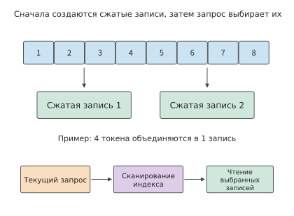
Рис. 2-13. Последовательность сжатия контекста и индексного выбора. В верхней части показано только количественное соотношение, при котором восемь токенов образуют две записи; перекрывающиеся проекции и взвешенная агрегация V4 CSA опущены. В нижней части показан процесс одного запроса: сначала сканируется индекс, а затем читаются состояния основного механизма внимания.
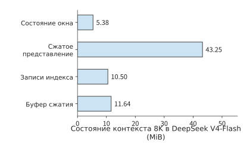
Рис. 2-14. Четыре вида состояний DeepSeek V4-Flash при контексте 8K. Окно, сжатый контекст и индекс хранят информацию об уже обработанном контексте; буфер сжатия хранит данные, которые ещё агрегируются или обновляются, и учитывается в ёмкости отдельно.
Сжатие также вводит ритм обновления, отличный от ритма запросов. При поступлении нового токена сначала обновляется текущий блок сжатия; когда совокупное количество обработанных токенов достигает значения, требуемого коэффициентом сжатия, создаётся долгосрочный элемент. CSA завершает блок каждые четыре токена, а HCA — каждые 128 токенов. Поэтому при обработке одного и того же входного токена необходимо отдельно рассчитывать, сколько элементов читает основной механизм внимания, сколько элементов сканирует индекс и завершается ли блок компрессора. При обработке 128-го токена оба вида блоков сжатия могут завершиться одновременно.15
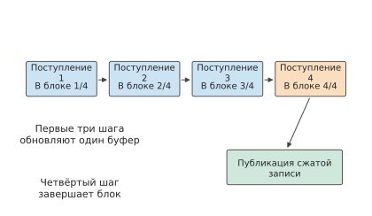
Рис. 2-15. Создание одного блока при коэффициенте сжатия четыре. Первые несколько входных токенов обновляют буфер одного и того же блока; после поступления четвёртого токена формируется сжатый элемент, доступный последующим запросам.
Упражнение 2-4 (углублённое): как совместное использование голов KV и сжатие контекста изменяют объёмы хранения и чтения
Сначала уменьшите в Qwen3-8B количество голов KV с 8 до 4, сохранив 32 головы запросов, и отдельно рассчитайте изменения ёмкости KV, количества параметров проекции KV и объёма вычислений, необходимого для взаимодействия запроса с контекстом. Затем для слоя CSA модели DeepSeek V4-Flash увеличьте контекст с 8192 до 16384 и при коэффициенте сжатия 4 и выборе не более 512 сжатых элементов за один запрос рассчитайте количество сохранённых элементов, количество элементов, сканируемых индексом, и верхний предел количества выбранных элементов. Объясните, почему эти три величины растут не в одной и той же пропорции.
2.3.4 Линейное внимание и рекуррентное обновление конечного состояния¶
Механизмы из разделов 2.3.1–2.3.3 всё ещё позволяют различать отдельные сохранённые элементы контекста. При рекуррентном обновлении конечного состояния используется другой процесс: с поступлением каждого нового токена его вклад объединяется с существующим состоянием, текущий запрос напрямую использует обновлённое состояние, а на следующем шаге это состояние снова перезаписывается. Это соответствует описанной в начале раздела 2.3 картине с непрерывным перезаписыванием сводки фиксированной длины. Такое линейное внимание меняет порядок вычисления запросов, ключей и значений, больше не вычисляя явно оценки внимания для всех пар «запрос — ключ». При фиксированной размерности признаков размер матрицы состояния остаётся неизменным, а объём вычислений для обработки всей последовательности линейно растёт с её длиной.
Основная операция при построении состояния — внешнее произведение: каждый элемент вектора ключа умножается на каждый элемент вектора значения, образуя двумерную таблицу связей. Рассмотрим матрицу \(\mathcal S_t\), полученную суммированием внешних произведений ключей и значений. При поступлении каждого нового токена сначала считывается прежнее состояние, затем в него записывается вклад текущей позиции, после чего текущий запрос напрямую считывает результат из матрицы состояния:
Если ширина ключа равна \(d_k\), а ширина значения — \(d_v\), состояние всегда содержит \(d_kd_v\) элементов. Новый токен изменяет содержимое матрицы, но не её размер. Таким образом, список контекста по токенам превращается в набор накопленных связей между ключами и значениями, из которого запрос получает выходные данные.
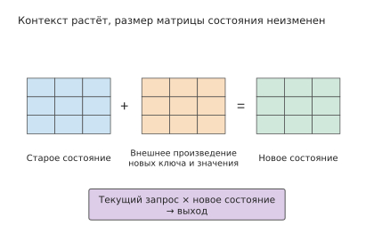
Рис. 2-16. Рекуррентное обновление матрицы фиксированного размера. Внешнее произведение нового ключа и значения добавляется к прежнему состоянию, при этом форма матрицы остаётся неизменной; запрос использует обновлённое состояние для вычисления выходных данных. На схеме показано простое рекуррентное суммирование.
В реальном рекуррентном внимании помимо простого суммирования применяются гейтирование и коррекция. Kimi Delta Attention (KDA) — используемый в Kimi механизм гейтированного рекуррентного внимания, который хранит информацию контекста в матрице связей фиксированного размера. KDA использует гейтирование и delta-обновление; здесь delta означает запись поправки на основе текущей ошибки предсказания. При каждом обновлении не только записывается новая информация: текущий ключ также используется для проверки предсказания существующего состояния, после чего на основе результата записывается поправка. Прежняя информация хранится в виде агрегированных связей, текущий ключ определяет, куда вносится поправка, а гейт затухания — сколько прежней информации следует сохранить. KDA обновляет матрицу связей фиксированного размера, а не добавляет элементы в список, где данные хранятся по каждому токену.
Каждый слой KDA в Kimi K3 содержит 96 голов, а рекуррентная матрица каждой головы имеет размер \(128\times128\). При хранении в FP32 один слой занимает 6 MiB, а 69 слоёв — 414 MiB. За один шаг decode прежняя матрица считывается, с ней объединяется новая информация, после чего результат записывается обратно. В идеальном случае при однократном чтении и записи общий объём данных составляет 828 MiB. Этот объём чтения и записи не увеличивается с длиной контекста: при коротком контексте он представляет собой значительные фиксированные накладные расходы, а при длинном позволяет избежать непрерывного роста объёма сканирования вместе с количеством токенов контекста.
Реализации prefill и decode также различаются. Для decode используется одношаговое рекуррентное обновление; фрагмент заранее известного ввода можно параллельно обработать блочным алгоритмом, передавая состояние между блоками. Промежуточные данные внутри блоков и состояния между блоками занимают временное пространство, поэтому по одному лишь размеру итогового рекуррентного состояния невозможно предсказать пиковое потребление памяти во время prefill. В главе 5 этот вопрос анализируется на основе жизненного цикла буферов — от выделения до освобождения.16
2.3.5 Состав состояния при гибридном внимании¶
В реальных моделях слои с конечным состоянием часто сочетаются со слоями глобального внимания. Это позволяет одновременно использовать сжатие контекста за счёт рекуррентной структуры и частично сохранять возможность прямого доступа к глобальному контексту. Состояние всей модели состоит из нескольких частей: одни имеют фиксированный размер, другие растут вместе с длиной контекста.
Kimi K3 содержит 93 слоя: 69 слоёв KDA и 24 слоя MLA. При контексте в 8192 токена, компактном MLA в формате BF16, рекуррентном состоянии в FP32 и слотах короткой свёртки в BF16 (короткая свёртка смешивает вдоль последовательности входы нескольких соседних позиций, а слоты сохраняют недавние входы, необходимые для обновления на следующем шаге) эти три компонента занимают соответственно 216 MiB, 414 MiB и 19,4 MiB — всего около 649,4 MiB. При использовании эталонного развёрнутого кэша один только компонент MLA увеличивается до 11,25 GiB, соответственно изменяется и общий объём. 17
Для Qwen3.6-35B-A3B также необходимо отдельно рассчитывать объём состояния слоёв линейного и полного внимания. Модель содержит 30 слоёв линейного внимания и 10 слоёв полного внимания; глобальный KV на каждый токен контекста одного запроса занимает 20 KiB, фиксированное рекуррентное состояние в FP32 — ещё 60 MiB, а слоты короткой свёртки в BF16 — 1,875 MiB. При контексте в 8192 токена эти три компонента в сумме занимают 221,9 MiB. Это состояния ветви внимания. Следующая за ней ветвь смеси экспертов (Mixture of Experts, MoE) предоставляет несколько подсетей прямого распространения, из которых маршрутизатор для каждого токена выбирает часть для выполнения, определяя, какие веса фактически используются в общем каркасе модели. Эти доступные для выбора подсети называются маршрутизируемыми экспертами, а ветвь, выполняемая для всех токенов, — общим экспертом. Механизмы внимания и MoE вместе образуют полную модель.
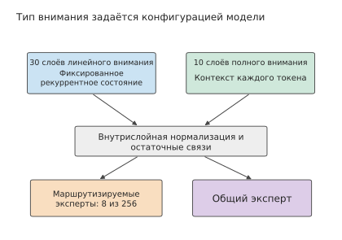
Рисунок 2-17. Два типа слоёв Qwen3.6. Конфигурация определяет, использует ли каждый слой линейное или полное внимание, после чего в обоих случаях выполняются маршрутизируемые и общие эксперты; две верхние ветви соответствуют линейному и полному вниманию, а модель содержит соответственно 30 и 10 слоёв этих типов.
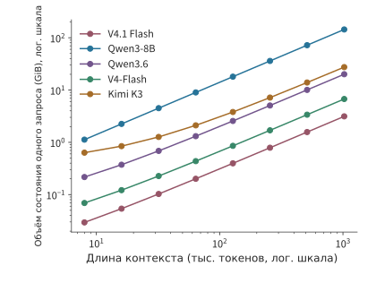
Рисунок 2-18. Объём состояния при росте контекста. Обе оси представлены в логарифмическом масштабе; пять моделей организуют состояние соответственно посредством добавления по одному токену, рекуррентного обновления, сжатия и совместного использования между слоями. По вертикальной оси отложен объём состояния одного запроса, по горизонтальной — количество токенов контекста.
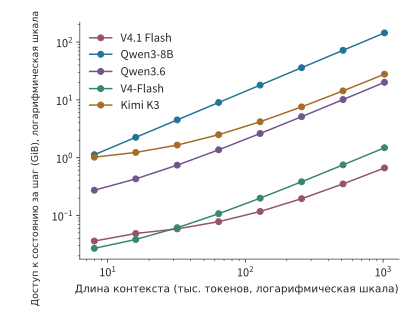
Рисунок 2-19. Учитываемый объём доступа к состоянию на каждом шаге для той же группы моделей. Для контекста, накапливаемого по одному токену, учитывается чтение, а для рекуррентной матрицы — одно чтение и одна запись; это логический объём данных на заданном пути, используемый для сравнения разных закономерностей роста объёма и доступа. Под шагом понимается один этап decode, генерирующий следующий токен для одного запроса; по вертикальной оси не учитывается чтение весов модели.
Форма этих пяти кривых состояния определяется различными представлениями. В Qwen3-8B при добавлении каждого токена все слои GQA дописывают \(K\) и \(V\); в Kimi K3 контекст дописывается только в части MLA, тогда как часть KDA сохраняет фиксированную матрицу; в DeepSeek V4-Flash записи добавляются после завершения блока сжатия. В V4.1 Flash несколько слоёв дополнительно читают один общий глобальный кэш, а Qwen3.6 сочетает рекуррентные слои со слоями полного внимания. Для длинного контекста скорость роста определяет дополнительный объём; для короткого контекста начальный объём определяется фиксированными компонентами, такими как рекуррентная матрица.
Сложение фиксированного рекуррентного состояния и контекста, растущего на каждый токен, даёт модель объёма гибридной структуры:
\(c_{\mathrm{state}}\) — количество байтов состояния, добавляемых для каждого токена контекста, а \(H_*\) — длина контекста, при которой объёмы двух частей равны. Фиксированная часть Qwen3.6 занимает \(61.875\) MiB, а каждый токен добавляет 20 KiB, поэтому \(H_*=3168\); в компактном представлении Kimi K3 каждый токен добавляет 27 KiB, фиксированная часть занимает около 433,4 MiB, а точка пересечения находится примерно на 16,4K токенов контекста. Ниже точки пересечения сокращение контекста позволяет сэкономить лишь небольшую часть пространства; значительно выше неё уменьшение ширины представления каждого токена экономит объём эффективнее. В DeepSeek V4-Flash записи добавляются по мере завершения блоков сжатия, поэтому кривая растёт ступенчато.
Эти состояния поддерживают разные способы доступа к информации: глобальный KV позволяет запросу напрямую выбирать старые токены, рекуррентная матрица сохраняет связи контекста посредством пошагового обновления, а сжатый индекс ищет релевантное содержимое среди меньшего числа записей. В разделе 2.6.3 требования к ресурсам будут сопоставлены на конкретных задачах поиска. 18
Упражнение 2-5 [основное]: при какой длине контекста объём KV превысит объём фиксированного состояния?
Для Qwen3.6 примите объём фиксированного состояния равным 61,875 MiB, а объём на каждый токен контекста — 20 KiB; для компактного представления Kimi K3 рекуррентное состояние занимает 414 MiB, состояние свёртки — 20 348 928 байт, а каждый токен контекста дополнительно занимает 27 KiB. Для каждой модели найдите длину контекста, при которой растущее вместе с контекстом состояние сравняется по объёму с фиксированным состоянием, а также общий объём состояния при контексте 32K и 128K. Если бюджет состояния составляет всего 256 MiB, сколько токенов контекста сможет сохранить каждая модель? Объясните, почему при бюджете объёма меньше размера фиксированного состояния сокращение контекста всё равно не позволяет вместить состояние модели.
2.3.6 Сколько хранится на каждый токен и сколько считывается при каждом decode¶
Для сравнения стоимости контекста моделей необходимо одновременно привести три величины: средний прирост хранилища на каждый дополнительный токен глобальной истории, фактически сохраняемое состояние при длине \(N\) и объём истории, который требуется считать для одного запроса decode. Глобальный KV растёт вместе с контекстом; скользящее окно сохраняет только последний фрагмент; размер рекуррентного состояния фиксирован, но на каждом шаге его всё равно требуется читать и записывать. Деление всех трёх величин на длину контекста скроет различия в закономерностях их роста.
Рассмотрим запрос, которому в текущей позиции доступен контекст из \(N=8192\) токенов, включая сам токен запроса. В таблице с указанными для каждой строки точностью и путём кэша рассчитаны ёмкость глобальной истории и логический объём считывания для одного запроса: выбранные на каждом слое K/V или общая скрытая переменная считываются один раз, а затем повторно используются головами запросов для расчёта оценок QK и вычисления PV (то есть описанного выше \(AV\) — агрегирования значений с помощью весов внимания); дополнительно учитываются локальное окно SWA и сканирование индекса. Обновления состояния рекуррентной матрицы, свёртки и компрессора рассматриваются отдельно после таблицы.
| Модель и путь кэша | Средний прирост глобальной истории (B/token) | Глобальная история 8K (MiB) | Считывание KV внимания и индекса при каждом decode (MiB) |
|---|---|---|---|
| Qwen3-8B, BF16 GQA | 147,456 | 1,152 | 1,152 |
| Qwen3-32B, BF16 GQA | 262,144 | 2,048 | 2,048 |
| Qwen3-30B-A3B, BF16 GQA | 98,304 | 768 | 768 |
| Qwen3-235B-A22B, BF16 GQA | 192,512 | 1,504 | 1,504 |
| Qwen3.5-397B-A17B, часть с полным вниманием BF16 | 30,720 | 240 | 240 |
| Qwen3.6, часть с полным вниманием BF16 | 20,480 | 160 | 160 |
| Kimi K3, компактный путь MLA BF16 | 27,648 | 216 | 216 |
| DeepSeek V4-Flash, производственный смешанный формат | 3,514.25 | 27.455 | 12.556 |
| DeepSeek V4.1 Flash, производственный смешанный формат | 890 | 6.953 | 11.375 |
Два представления MLA в Kimi K3 показывают, как путь кэша влияет на ёмкость: компактный путь из таблицы добавляет 27,648 B на каждый токен, тогда как используемая в этой книге эталонная реализация Hugging Face разворачивает K/V и добавляет 1,474,560 B на каждый токен. В разделе «Расчёты кэша для разных моделей» приведено точное количество байтов для обоих путей.
В строках двух поколений Flash используется производственный смешанный формат: основная запись V4-Flash имеет смешанный формат FP8/BF16 и занимает 584 B, а индекс использует MXFP4 — формат, в котором каждые 32 четырёхбитных значения совместно используют один scale; формат V4.1 Flash описан ниже. Числа для V4-Flash в разделе 2.3.3, напротив, рассчитаны для эталонного формата BF16: при том же контексте 8K глобальная история занимает 53.75 MiB, дополнительно окно — 5.375 MiB, а один запрос считывает 27.625 MiB. Указанные в таблице 27.455 MiB для V4-Flash — это резидентный объём глобальной истории в производственном формате, лишь численно близкий к объёму считывания 27.625 MiB в эталонном формате BF16.
Для смешанного внимания необходимо также учитывать фиксированное состояние. При используемых в этой главе рекуррентном состоянии FP32 и короткой свёртке BF16 рекуррентные матрицы и слоты свёртки суммарно занимают 184.219 MiB у Qwen3.5, 61.875 MiB у Qwen3.6 и 433.406 MiB у Kimi K3. Текущее потребление памяти совместно определяется этими фиксированными состояниями и контекстным кэшем из таблицы; при каждом decode также требуется читать и записывать рекуррентную матрицу и обновлять слоты свёртки.
Помимо отдельного сохранения на каждом слое, состояние можно совместно использовать между слоями. Долгое время decoder-only оставалась основной архитектурой универсальных генеративных языковых моделей: для обработки входных данных и поточной генерации токенов применяется один и тот же набор основных слоёв, причём каждый слой обычно создаёт KV из собственного скрытого состояния. V4.1 Flash существенно изменила такое разделение обязанностей: построение представления контекста отделено от последующих запросов, благодаря чему обработка входных данных требует меньше вычислений основных слоёв. В техническом отчёте эта архитектура называется CED; там же указано, что она вдохновлена идеей YoCo о повторном использовании KV между слоями.29
Формулировка «кодировщик отвечает за понимание, декодировщик — за генерацию» здесь конкретно означает различие обязанностей этих двух частей при формировании представления контекста и вычислениях генерации. Кодировщик соблюдает причинное ограничение и не является кодировщиком традиционной модели sequence-to-sequence, способным двунаправленно обращаться ко всему входу; при генерации нового токена участие кодировщика также по-прежнему требуется. Эта асимметрия выражается в том, где создаётся информация и какие слои выполняются на каждом этапе, а не в передаче входа и выхода двум моделям, каждая из которых не участвует в вычислениях другой.
Для понимания этой архитектуры сначала можно разделить «создание глобального представления» и «запрос к глобальному представлению». В CED модели V4.1 Flash 40 слоёв текстовой основы последовательно разделены на первые 20 слоёв причинного кодировщика и последующие 20 слоёв декодировщика. Обе части принадлежат одной авторегрессионной модели, и каждый токен в кодировщике имеет доступ только к информации в текущей позиции токена и предшествующих позициях.
Сначала кодировщик обрабатывает вход. Требуемый декодировщику глобальный KV создаётся проекцией представления последнего слоя кодировщика, поэтому нет необходимости предварительно пропускать каждый входной токен через все слои декодировщика. Однако локальный SWA каждого слоя декодировщика по-прежнему зависит от собственного входного представления этого слоя, поэтому в декодировщик необходимо передать выходы кодировщика максимум для последних 128 токенов промпта и построить локальное состояние; далее это называется воспроизведением конечного окна. После начала поточной генерации токенов каждый новый токен последовательно проходит все 40 слоёв кодировщика и декодировщика. В главе 3 будет рассчитано, какие вычисления над входом благодаря этому исключаются, а в главе 8 будут разграничены два вида воспроизведения для кодировщика и декодировщика.
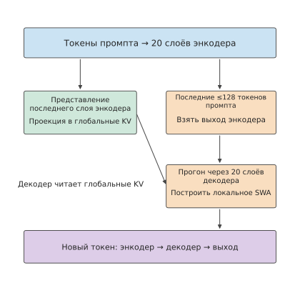
Рисунок 2-20. CED разделяет создание глобального KV и построение локального состояния декодировщика. Большинство токенов промпта проходят только основную часть кодировщика и проекцию глобального KV; выходы кодировщика для конечного окна дополнительно проходят через декодировщик, приближённо формируя локальный SWA. Генерируемые новые токены по-прежнему проходят все 40 слоёв.
Стоимость длинного контекста зависит также от количества слоёв, в которых повторно сохраняется один и тот же фрагмент информации. В техническом отчёте V4.1 ограничения по ёмкости HBM, SSD и памяти хоста, а также по пропускной способности переноса KV прямо указаны как проектные ограничения. В V4.1 степень сжатия последовательности по сравнению с V4 не увеличена: V4 использует CSA со сжатием 4:1 и HCA со сжатием 128:1, тогда как в V4.1 HCA устранён, глобальные записи кодировщика сжимаются в отношении 2:1, а записи декодировщика сохраняются в отношении 1:1. Уменьшение кэша в V4.1 обеспечивается главным образом совместным использованием между слоями и более низкой точностью при сохранении более мелкой гранулярности исторических токенов.29
Совместное использование также изменяет информацию, которую каждый слой способен выбирать независимо. Слои, использующие данные повторно, больше не создают собственные глобальные K/V, однако каждый слой по-прежнему сохраняет собственный запрос Q и локальный SWA, поэтому может вычислять для общих записей другие веса внимания и формировать новый выход. Совместное использование кэша устраняет один из видов независимых послойных представлений, но не превращает вычисления всех слоёв в одинаковые операции.
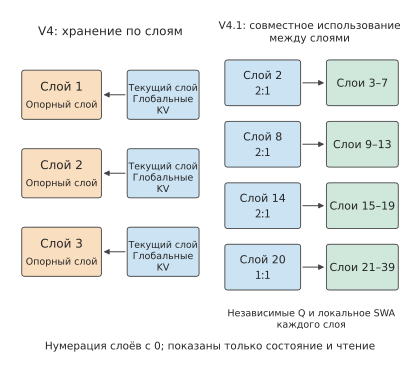
Рисунок 2-21. Способы хранения глобального KV в V4 и V4.1. Слева послойное хранение показано на примере трёх репрезентативных слоёв; справа показаны четыре слоя V4.1, независимо сохраняющие глобальный KV, и отношения совместного использования. Сплошные линии обозначают считывание данных; каждый использующий их слой по-прежнему имеет собственные Q и локальный SWA, остальные вычисления на схеме опущены.
Подставим описанные выше отношения совместного использования в расчёт ёмкости. Выпущенная в сентябре 2026 года DeepSeek V4.1 Flash имеет 40 слоёв текстовой основы, но независимый глобальный KV есть только у четырёх слоёв: при нумерации с нуля слои 2, 8 и 14 создают одну сжатую запись на каждые два токена, а слой 20 создаёт одну запись на каждый токен; остальные слои глобального внимания совместно используют эти кэши. Основная запись содержит 512 значений в формате FP4 — формате с плавающей точкой, где каждое значение занимает 4 бита; кроме того, на каждые 16 значений приходится один байт scale, поэтому каждая запись занимает \(512/2+512/16=288\) байт. Индексная запись занимает \(128/2+128/32=68\) байт. Средний прирост хранилища глобального KV равен
Для сравнения, прежняя V4-Flash имеет 21 слой со сжатием 4:1 и 20 слоёв со сжатием 128:1. В формате официальной FlashMLA — библиотеки DeepSeek с открытым исходным кодом для вычисления внимания MLA, — где основная запись занимает 584 B, а индексная — 68 B, средний прирост хранилища глобального KV равен
Средние приросты глобального KV различаются примерно в 3.95 раза, что соответствует округлённым значениям 3,514 и 890 B/token на официальной схеме. Помимо кэша глобального контекста, локальное окно V4.1 сохраняет на каждом слое не более 128 записей; каждая запись FP8 — формата с плавающей точкой, где каждое значение занимает 1 байт, — вместе со scale занимает 528 B, что суммарно даёт 2.578 MiB для 40 слоёв. Глобальная история растёт вместе с контекстом, тогда как локальное окно после заполнения сохраняет фиксированную ёмкость.
При пошаговом рассмотрении процесса генерации виден также ритм роста глобального кэша. В V4.1 при переходе от чётной длины глобального кэша к следующей нечётной длине добавляется только 356 B — запись слоя 20, создаваемая для каждого токена. При переходе к следующей чётной длине каждый из трёх компрессоров со сжатием 2:1 на слоях 2, 8 и 14 завершает ещё по одной записи, поэтому на этом шаге суммарно добавляется \(4\times356=1{,}424\) B. После заполнения окна последующие записи перезаписывают старые слоты, и ёмкость больше не растёт, однако запись данных продолжается: 40 слоёв SWA на каждом шаге суммарно записывают \(40\times528=21{,}120\) B, не считая обновлений компрессоров.
Слоям, совместно использующим один глобальный кэш, всё равно требуется считывать данные, а некоторые слои дополнительно выполняют повторную индексацию. В сценарии 8K при указанном в таблице производственном смешанном формате объём логического считывания KV внимания, включая локальный SWA, и индекса составляет 12.556 MiB для V4-Flash и 11.375 MiB для V4.1 Flash; совместное использование между слоями сокращает главным образом пространство, занимаемое повторно сохранёнными данными.
Повторное использование кэша и выбор записей также можно организовать раздельно. CSA2 в V4.1 разделяет слои на три режима. Слои Full (полные) целиком выполняют процесс «создание глобального KV, индексирование, выбор и внимание». Слои Reindex (повторная индексация) совместно используют KV и заново выбирают top-k с помощью собственного индексного запроса; слои Reuse (повторное использование) повторно используют также уже выбранные записи кэша. Среди 38 слоёв глобального внимания V4.1 есть 4 слоя Full, 4 слоя Reindex и 30 слоёв Reuse; ещё два слоя используют только SWA. Первый слой Full декодировщика сканирует глобальное пространство и выбирает не более \(2048\times8=16{,}384\) записей-кандидатов; в разделе 2.3.2 технического отчёта этот набор называется пулом кандидатов (candidate pool), а его кандидатами являются записи кэша, доступные для извлечения механизмом внимания. Последующие слои Reindex независимо выбирают не более 512 записей только внутри этого пула.30 Поэтому объём поиска на последующих слоях ограничен сверху, но первоначальное глобальное сканирование по-прежнему растёт вместе с контекстом.
Например, если запросу доступны 131,072 записи глобального кэша, они разделяются на 16,384 блока по 8 записей. Первый слой Full декодировщика сначала оценивает все записи кэша, принимает максимальную оценку внутри блока за оценку блока, а затем выбирает 2,048 блоков, формируя 16,384 записи-кандидата. Сам этот слой по-прежнему выбирает top-512 из глобальных оценок; последующие слои Reindex с помощью новых индексных запросов пересчитывают оценки среди кандидатов и независимо выбирают по 512 записей кэша. Пул кандидатов ограничивает область поиска последующих слоёв, а top-512 каждого слоя определяет, какие записи в итоге считывает этот слой.
Пул кандидатов не только устанавливает верхнюю границу объёма поиска для последующих слоёв, но и делает их выбор зависимым от первого этапа фильтрации: если запись кэша оказалась за пределами пула кандидатов, последующие слои Reindex уже не смогут выбрать её для этого запроса. Обучение модели должно учитывать такую область поиска; в главе 10 будет объяснено, как V4.1 включает ограничение по кандидатам в постобучение.
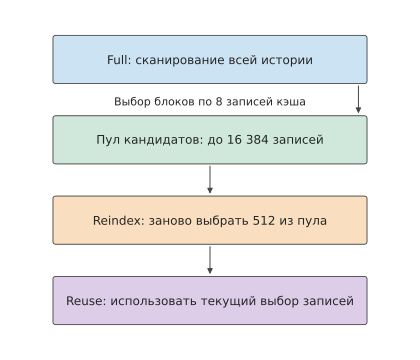
Рисунок 2-22. Иерархический выбор записей кэша декодировщиком V4.1. Первый слой Full сначала сканирует глобальное пространство и выбирает не более 16,384 записей-кандидатов; последующие слои Reindex повторно выбирают среди кандидатов 512 записей, а Reuse используют уже имеющийся выбор. Количество записей на схеме показано не в масштабе; независимые Q и локальный SWA каждого слоя не изображены.
2.4 Условные вычисления и повторное использование весов экспертов¶
В разделе 2.3 объём состояния контекста уменьшался за счёт совместного использования, сжатия и рекуррентных вычислений. Другой основной источник данных — веса модели: обязательно ли для каждого токена использовать все параметры модели? В этом разделе данный вопрос рассматривается на примере FFN.
Плотная FFN использует для каждого токена один и тот же набор матриц; MoE распределяет параметры между несколькими экспертами, а маршрутизатор выбирает для каждого токена небольшое число экспертов. Благодаря этому объём хранимых моделью параметров и объём параметров, активируемых одним токеном, можно регулировать независимо, а выбор экспертов токенами внутри пакета также влияет на фактически используемый набор весов.
2.4.1 Плотная сеть прямого распространения и маршрутизация экспертов¶
Типичная ветвь MoE сначала вычисляет по входным данным оценки маршрутизации, выбирает по top-k экспертов с k наивысшими оценками, передаёт токен выбранным экспертам, а затем объединяет результаты с учётом весов маршрутизации. При наличии общего эксперта также существует ветвь, через которую проходят все токены. Сам эксперт обычно по-прежнему состоит из трёх матриц: gate, up и down, поэтому вычисления можно пошагово развернуть по схеме SwiGLU из раздела 2.1.4.
Рассмотрим Qwen3.6-35B-A3B. Её текстовая основа содержит 40 слоёв с размерностью скрытого состояния 2048; в каждом слое имеется 256 маршрутизируемых экспертов, из которых для каждого токена выбираются 8, промежуточная размерность эксперта равна 512, а также присутствует общий эксперт. Один маршрутизируемый эксперт содержит \(3\times 2048\times 512=3,145,728\) параметров, которые при хранении в BF16 занимают 6 MiB. Все маршрутизируемые эксперты одного слоя занимают 1,5 GiB, а восемь экспертов, выбранных для одного токена, — 48 MiB.
Пусть эксперт \(e\) фактически получает \(t_e\) токенов. Тогда его gate/up имеют вид \([t_e,2048]\times [2048,512]\), а down — \([t_e,512]\times [512,2048]\); основной объём матричных вычислений равен \(6t_e\times 2048\times 512\). Сложив объёмы вычислений всех экспертов, получим общий объём матричных вычислений всех маршрутизируемых экспертов. Сначала маршрутизатор определяет значения \(t_e\), выбранные эксперты выполняют три проекции, после чего результаты собираются и объединяются с учётом весов; общая ветвь обрабатывает все входные строки.
Обозначим через \(E\) общее число маршрутизируемых экспертов, через \(k_{\mathrm{top}}\) — число экспертов, выбираемых для каждого токена, а через \(N_e\) — число параметров одного эксперта. Тогда в каждом слое хранится \(EN_e\) параметров маршрутизируемых экспертов, а объём выполняемых для одного токена матричных вычислений экспертов составляет приблизительно \(2k_{\mathrm{top}}N_e\). Увеличение \(E\) расширяет доступный для выбора набор параметров; непосредственно увеличить эту часть вычислений на один токен может только рост фактически выбираемого числа экспертов или их размера. Обозначение A3B в названии Qwen3.6 отражает объём активируемых параметров; всего текстовая модель содержит около 34,66 млрд параметров, а её веса в BF16 занимают примерно 69,321 GB.
2.4.2 Фактический объём вычислений и чтение весов внутри пакета¶
Величина \(2k_{\mathrm{top}}N_e\) из раздела 2.4.1 учитывает только работу экспертов для одного токена; при одновременной маршрутизации пакета токенов необходимо также учитывать, к скольким различным экспертам они попадут.
Пример 2-4. Почему при одинаковом объёме вычислений экспертов чтение весов различается в 32 раза? Сравним для одного слоя Qwen3.6 равномерное и концентрированное распределение.
Решение: даже при одинаковом числе активируемых параметров объём чтения весов внутри пакета может различаться. Предположим, что одновременно выполняется один шаг decode для \(B=64\) запросов, причём каждый запрос на этом шаге передаёт на вход один токен, поэтому \(m=B=64\). Каждый токен выбирает 8 экспертов, что в сумме даёт 512 назначений токенов экспертам. При равномерном распределении между 256 экспертами каждый эксперт в среднем получает 2 токена, и текущий пакет обращается ко всем маршрутизируемым экспертам. Если же все токены направляются одной и той же группе из 8 экспертов, каждый эксперт получает 64 токена, а текущий пакет обращается только к 8 наборам весов экспертов.
Пусть \(U\) — число различных экспертов, к которым фактически обращается данный пакет. Если в процессе маршрутизации не отбрасывается ни один назначенный экспертам токен, то \(\sum_e t_e=Bk_{\mathrm{top}}\), поэтому
В первой формуле суммируется общее число назначенных строк, а во второй — фактически загружаемые различные веса. В обоих вариантах маршрутизации из примера выполняется 512 назначений токенов экспертам; один токен направляется восьми экспертам и занимает по одной строке во входной матрице каждого из них. Эти 512 строк образованы 64 исходными токенами, поэтому объём матричных вычислений одинаков; однако \(U\) принимает значения 256 и 8, а объём чтения на слой составляет соответственно 1,5 GiB и 48 MiB, то есть различается в 32 раза. Маршрутизируемые эксперты всех 40 слоёв вместе занимают 60 GiB, тогда как при концентрированной маршрутизации выбранные для одного пакета веса в сумме занимают лишь 1,875 GiB.
| Вариант маршрутизации при \(B=64\) | Различных экспертов, используемых в слое | Токенов на эксперта | Идеальный объём чтения маршрутизируемых экспертов на слой |
|---|---|---|---|
| Равномерное распределение | 256 | 2 | 1,5 GiB |
| Концентрированное распределение в одну и ту же группу из 8 экспертов | 8 | 64 | 48 MiB |
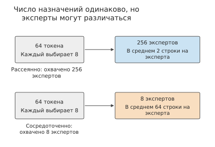
Рисунок 2-23. Каждый из 64 токенов выбирает восемь экспертов, что в сумме даёт 512 назначений. При рассеянном распределении они могут охватывать 256 экспертов, а при концентрированном используются только восемь; соответственно изменяется и число строк, обрабатываемых каждым экспертом.
Различие в объёме чтения обусловлено числом входных строк, для которых используется каждый набор весов: при равномерном распределении каждый эксперт обрабатывает два токена, а при концентрированном — 64 токена. Объём вычислений с участием одного и того же набора весов возрастает в 32 раза, а идеальный объём обращения к весам сокращается до одной тридцать второй исходного значения. Одновременно вместо множества матричных умножений с входами всего из двух строк теперь требуется выполнить лишь небольшое число матричных умножений с входами из 64 строк; это влияет как на повторное использование весов, так и на эффективность вычислений.19
Теперь сравним модели целиком, суммировав показатели по всем слоям: для Qwen3.6 при контексте из 8192 уже имеющихся токенов и decode с \(B=1\) требуется около 7,33 GFLOPs, что меньше примерно 20,0 GFLOPs у Qwen3-8B. Различие в объёме вычислений всей модели обусловлено несколькими архитектурными изменениями: основа размерностью 2048 уменьшает проекции, 30 линейных слоёв используют рекуррентное состояние, а в MoE каждый раз выполняются вычисления только выбранных экспертов и общей ветви. Увеличение числа экспертов повышает общее число параметров, тогда как объём работы при каждом вызове зависит от того, какие вычисления фактически выполнялись.
Разреженная активация позволяет независимо регулировать общее число параметров и число параметров, фактически используемых каждым токеном, благодаря чему модель может обращаться к более крупному набору параметров при меньшем объёме вычислений. При обслуживании результаты маршрутизации определяют, для скольких токенов повторно используются веса каждого эксперта; пример 2-4 как раз демонстрирует различие между этими двумя способами доступа.
2.4.3 Общие эксперты и вычисления в латентном пространстве¶
Описанное выше различие определяется числом входных строк, получаемых экспертами. Необходимо также учитывать размер самих экспертов: общий эксперт обрабатывает все входные данные, а эксперты в латентном пространстве предварительно уменьшают размерность входа. Оба подхода изменяют как необходимый одному эксперту объём весов, так и объём выполняемых им вычислений.
В каждом слое DeepSeek V4-Flash имеется 256 маршрутизируемых экспертов, из которых для каждого токена выбираются 6, а также 1 общий эксперт; промежуточная размерность маршрутизируемого эксперта равна 2048. Матрицы gate/up одного эксперта имеют вид \([t_e,4096]\times [4096,2048]\), а down преобразует ширину с 2048 обратно в 4096; три проекции вместе содержат 25 165 824 параметра. В первых трёх слоях используется хеш-маршрутизация, а в последующих — маршрутизация по оценкам: хеш-маршрутизация определяет эксперта по токену, тогда как маршрутизация по оценкам выбирает эксперта на основании текущего представления.
Общий эксперт обрабатывает векторы признаков всех \(m\) токенов текущего входа, а маршрутизируемый эксперт \(e\) — только назначенные ему \(t_e\) токенов. Если общий эксперт содержит \(N_s\) параметров, объём матричных вычислений экспертов одного слоя равен \(2mN_s+2\sum_e t_eN_e\). При обычном одношаговом decode каждый запрос передаёт один новый токен, поэтому \(m=B\); при prefill необходимо суммировать все токены, обрабатываемые на этом шаге для каждого запроса. В DeepSeek V4-Flash для каждого токена выбираются шесть маршрутизируемых экспертов и выполняется один общий эксперт, поэтому объём вычислений представляет собой сумму этих двух составляющих; при этом для хранения необходимо сохранять все 256 маршрутизируемых экспертов и общую ветвь.
В каждом слое MoE модели Kimi K3 имеется 896 маршрутизируемых экспертов, из которых для каждого токена выбираются 16. Вход сначала проецируется из основного пространства размерностью 7168 в латентное пространство размерностью 3584, затем проходит преобразование эксперта с промежуточной размерностью 3072, а после объединения проецируется обратно в основное пространство. Общий эксперт непосредственно обрабатывает основное представление. Уменьшение размерности сокращает размеры матриц маршрутизируемых экспертов, но добавляет две проекции — при входе в латентное пространство и выходе из него.4
Если эксперты размещены на разных картах, входные токены необходимо отправить на карты, где расположены соответствующие эксперты, а после вычислений объединить результаты. Поэтому объём коммуникации зависит от размещения экспертов и места хранения входных данных. В главе 6 рассматривается распределение по нескольким картам, а в главе 9 — размещение на CPU/GPU и разделение AF, при котором Attention и FFN передаются разным ресурсам.
Упражнение 2-6 (расширенное). Как число экспертов и способ распределения влияют на вычисления и чтение весов
Для одного слоя Qwen3.6 возьмите \(B=64\), 256 маршрутизируемых экспертов и выбор 8 экспертов для каждого токена. Отдельно рассмотрите равномерное распределение и концентрированное распределение в одну и ту же группу из 8 экспертов, запишите число токенов \(t_e\), получаемых каждым экспертом, а затем вычислите FLOPs, число используемых экспертов и объём чтения весов в BF16. Затем вдвое уменьшите общее число экспертов, вдвое увеличьте промежуточную размерность и вдвое уменьшите число экспертов, выбираемых для каждого токена, после чего определите, изменятся ли общее число параметров экспертов и фактический объём выполняемых матричных вычислений экспертов. Наконец, объясните, как добавить к этим расчётам число параметров и объём вычислений общего эксперта; для модели с экспертами в латентном пространстве также объясните, как учесть проекции при входе в латентное пространство и выходе из него.
2.5 Форма сети и организация вычислений¶
Состояние контекста и выбор экспертов изменяют основные наборы данных, а глубина, ширина и способ соединения сети дополнительно определяют размер используемых матриц и порядок выполнения операций. Модели с близким числом параметров могут иметь разные вычислительные графы; даже у моделей с близким числом матричных FLOPs время хранения буферов и количество последовательных шагов могут различаться.
2.5.1 Глубина, ширина и гранулярность экспертов¶
Сначала не будем учитывать словарь и параметры малых векторов. Если ширина FFN сохраняет постоянное отношение к размерности скрытого состояния, число параметров плотной основной сети приблизительно пропорционально \(Ld^2\). Уменьшив размерность скрытого состояния вдвое и увеличив число слоёв в четыре раза, можно сохранить примерно то же число параметров этой части, однако длина цепочки послойных зависимостей также возрастёт в четыре раза. Каждая матрица станет меньше, но вычисления должны будут пройти через большее число слоёв; кроме того, для каждого слоя потребуется сохранять соответствующее состояние контекста. Таким образом, при близком бюджете параметров число слоёв и их ширина изменяют гранулярность вычислений и глубину зависимостей.
Структуру экспертов также можно изменить подобным образом, сохранив число параметров и объём вычислений. Общее число параметров экспертов с маршрутизацией в одном слое равно \(3Edf\), а объём вычислений экспертов для одного токена — \(6k_{\mathrm{top}}df\). Если вдвое уменьшить число экспертов \(E\), вдвое увеличить промежуточную размерность \(f\) и вдвое уменьшить число выбранных экспертов \(k_{\mathrm{top}}\), обе величины останутся неизменными. В качестве такого сопоставления можно сравнить 128 экспертов шириной 1536 в Qwen3-235B-A22B с выбором 8 экспертов для каждого токена и 64 эксперта шириной 3072 с выбором 4 экспертов для каждого токена. При этом размерность выхода маршрутизатора и число строк, поступающих каждому эксперту, всё равно изменятся, а значит, изменится и форма группового матричного умножения, при котором матричные умножения нескольких экспертов организуются как одна операция.
Проверим базовую конфигурацию и два варианта на числовом примере. В примере с 16 токенами объём матричных вычислений экспертов остаётся одинаковым для трёх вариантов гранулярности экспертов; как для базовой конфигурации, так и для варианта с 64 экспертами он составляет около 454 GFLOPs. При уменьшении числа экспертов вдвое и удвоении ширины каждого эксперта то же количество весов распределяется между меньшим числом крупных матриц; при удвоении числа экспертов и уменьшении ширины вдвое получаем большее число малых матриц. Маршрутизатор должен вычислять оценку маршрутизации для каждого эксперта, поэтому число его параметров также изменяется вместе с числом экспертов. В расчёте гранулярности экспертов вычисления маршрутизатора и матриц экспертов суммируются раздельно, показывая, почему при одинаковом общем числе параметров экспертов формы матриц всё же различаются.
Формы матриц и состояний также определяют минимальную единицу распределения работы между несколькими ускорителями. 128 экспертов можно разделить на восемь групп по 16 экспертов; четыре KV-головы при распределении только целыми головами образуют лишь четыре части, поэтому для выполнения на восьми ускорителях потребуется копировать часть KV или изменить группировку. В главе 5 эффективность выполнения рассматривается на основе разбиения матриц, а в главе 6 эти матрицы и состояния будут распределены между отдельными ускорителями.
2.5.2 Остаточные соединения и межслойные состояния¶
Помимо числа слоёв и их ширины, необходимо учитывать способ соединения слоёв. Остаточное соединение напрямую прибавляет вход подслоя к результату преобразования, создавая для исходной информации и градиента прямой путь через слои. Обычное остаточное соединение вычисляется как \(x_{\ell+1}=x_\ell+f_\ell(x_\ell)\), где \(f_\ell\) — преобразование \(\ell\)-го подслоя. Поэтому во время вычислений подслоя необходимо сохранять вход \(x_\ell\), чтобы прибавить его после получения результата преобразования. Если одно и то же представление используется ещё в нескольких последующих слоях, его необходимо хранить до завершения последнего использования. Таким образом, способ соединения непосредственно определяет, какие тензоры требуется сохранять одновременно.
Обычное остаточное соединение непрерывно складывает информацию с разных глубин в одном пути. Чтобы предоставить больше способов комбинирования межслойной информации и одновременно сохранить устойчивое распространение сигнала в глубокой сети, DeepSeek V4-Flash использует mHC (Manifold-Constrained Hyper-Connections, гиперсоединения с ограничением на многообразие). mHC расширяет один остаточный путь до нескольких и накладывает ограничения на коэффициенты смешивания между ними; в данном случае «ограничение на многообразие» означает, что элементы матрицы остаточного смешивания ограничиваются неотрицательными значениями, а суммы в каждой строке и каждом столбце должны быть близки к 1.26
Модель сохраняет четыре остаточных состояния, каждое из которых представляет собой 4096-мерное промежуточное представление текущего токена. Четыре представления сохраняются, чтобы последующие слои могли обучиться комбинировать информацию из разных путей. Каждый подслой сначала смешивает четыре представления в 4096-мерный вход подслоя, выполняет вычисление внимания или FFN, а затем записывает результат обратно в остаточные пути. Поэтому вход основных матриц остаётся 4096-мерным, а дополнительная работа сосредоточена на смешивании и объединении при входе в подслой и выходе из него. Четыре состояния позволяют передавать между слоями больше наборов представлений, а операции смешивания связывают эти представления с существующими соединениями подслоёв.
При обработке 8192 входных токенов проекции смешивания mHC требуют около 555 GFLOPs, а нематричные операции — около 149 GFLOPs. Матрица остаточного смешивания сначала нормализуется с помощью итераций Sinkhorn: каждая строка и каждый столбец поочерёдно делятся на соответствующую сумму, благодаря чему суммы строк и столбцов постепенно приближаются к 1. Это делает численный масштаб более устойчивым при смешивании во множестве слоёв. Затем нормализованные коэффициенты используются для комбинирования остаточных путей; в конце эти пути объединяются, образуя представление, которое передаётся в словарную голову. Таким образом, многопутевое остаточное соединение не только увеличивает число сохраняемых представлений, но и добавляет вычисления смешивания и нормализации в каждом слое.5
В Kimi K3 ставится задача дать текущему слою возможность при необходимости выбирать информацию с разных глубин, а не только получать единый смешанный результат последовательного послойного сложения. Для этого Kimi K3 использует Attention Residuals (AttnRes, остаточные соединения с attention): представлениям более ранних слоёв назначаются веса, после чего их взвешенная сумма образует вход текущего слоя. Этот механизм внимания выбирает информацию вдоль глубины сети, тогда как предшествующее внимание к последовательности выбирает информацию между различными токенами. Чтобы сократить затраты на хранение и чтение выходов всех слоёв, блочная реализация объединяет несколько слоёв в блок и сохраняет представления, доступные для выбора последующими блоками.26
Поскольку эти представления блоков потребуются последующим слоям, их необходимо продолжать хранить во время текущего прямого прохода, но после его завершения их можно освободить. Контекстные KV, напротив, необходимо сохранять для последующих шагов генерации. Сроки хранения этих данных различаются: AttnRes увеличивает объём временного хранилища в рамках одного прямого прохода, а KV сохраняются между несколькими вызовами в рамках запроса.20
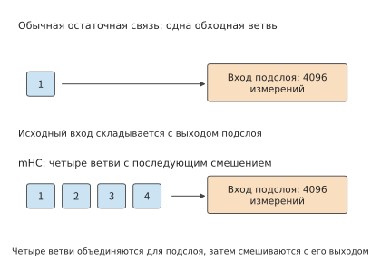
Рисунок 2-24. Область соединений обычного остаточного соединения и четырёхпутевого mHC. Обычное остаточное соединение сохраняет один обходной путь для входа подслоя; mHC объединяет несколько состояний для вычислений подслоя, а затем смешивает выход. Вход подслоя в обеих схемах имеет размерность 4096.
2.5.3 Предсказание нескольких токенов и вспомогательные вычисления¶
В двух предыдущих разделах изменялись формы и соединения внутри основной сети; другой класс архитектур добавляет к её выходу модули предсказания, изменяя число токенов, которые можно получить за один прямой проход. Обычная авторегрессионная основная сеть предсказывает следующий токен на основе текущего контекста. Предсказание нескольких токенов (Multi-Token Prediction, MTP) добавляет цели предсказания нескольких последующих токенов или вспомогательные модули предсказания. Во время обучения эти дополнительные цели побуждают текущее представление включать информацию, полезную для более отдалённого продолжения; во время инференса вспомогательный модуль может сначала предложить несколько токенов-кандидатов, а затем основная модель проверит их, сократив число последовательных раундов, необходимых для генерации того же количества токенов.
Спекулятивное декодирование (speculative decoding) сначала генерирует последовательность кандидатов с меньшими затратами, после чего целевая модель проверяет эти кандидаты. При использовании MTP для спекулятивного декодирования последующие токены предварительно генерируются на основе текущих признаков основной сети, а затем передаются целевой модели для проверки. Если проверку проходят несколько токенов, за один раунд можно получить несколько действительных выходов; в противном случае генерация продолжается с позиции после последнего прошедшего проверку токена. Следовательно, ускорение зависит от времени генерации черновика, времени проверки целевой моделью и числа токенов, проходящих проверку в каждом раунде. В главе 8 будет рассчитана взаимосвязь между этими тремя величинами.
Рассчитаем одно вспомогательное предсказание на примере DeepSeek V4-Flash. Его вспомогательный блок MTP получает признаки основной сети и token ID, после чего предсказывает последующую позицию. Для одного токена, то есть при \(B=1,P=1\), одно вспомогательное вычисление требует около 1,80 GFLOPs, из которых около 1,06 GFLOPs приходится на общую словарную голову. Общая словарная голова составляет более половины объёма этого вычисления: хотя она не добавляет отдельных весов, при каждом вызове всё равно необходимо выполнять словарную проекцию.6
Благодаря вспомогательному предсказанию один прямой проход может предоставить несколько кандидатов, из которых после проверки и сэмплирования формируется действительный выход. В главе 3 кодирование, генерация, итерации и вывод в реальном времени будут объединены в полную нагрузку.
Пусть один обычный шаг decode занимает \(T_d\), а суммарное время подготовки черновика и проверки в одном раунде спекулятивного декодирования составляет \(T_s+T_v\); при этом в среднем получается \(\bar g\) действительных выходов. Тогда время на один выход равно \((T_s+T_v)/\bar g\), а условие получения выигрыша имеет вид
Например, если обычный шаг decode занимает 20 ms, подготовка черновика и проверка вместе занимают 30 ms, а за один раунд в среднем получаются два действительных выхода, то на каждый выход приходится 15 ms; если же получается только один выход, потребуется 30 ms. Предсказание большего числа позиций увеличивает объём работы в одном раунде, поэтому дополнительные вычислительные затраты компенсируются лишь тогда, когда принимается достаточно много выходов.
2.6 Требования к ресурсам всей модели и сравнение¶
В разделах 2.3–2.5 были представлены три типа структурных изменений: представление контекста определяет размер состояния и способ доступа к нему, выбор экспертов определяет, какие веса используются при каждом вычислении, а глубина сети и способ соединения слоёв определяют порядок вычислений. В этом разделе мы объединим эти части, сравним объём вычислений и требования к памяти полных моделей при одинаковых входных данных, а затем проверим выходные данные моделей на конкретных задачах.
2.6.1 Требования компонентов к ресурсам и сводные показатели моделей¶
Структуры внимания и конфигурации экспертов пяти моделей. В этой главе выбраны одна плотная базовая модель и четыре модели MoE с различными архитектурами, требования к ресурсам которых сравниваются по единым правилам расчёта матриц. Суффикс T у количества параметров в таблице 2-A означает триллионы.
Таблица 2-A. Общая архитектура пяти моделей (текстовая часть)
| Параметр архитектуры | DeepSeek V4.1 Flash | Qwen3-8B | Qwen3.6-35B-A3B | DeepSeek V4-Flash | Kimi K3 |
|---|---|---|---|---|---|
| Общее число логических параметров, приблизительно | 551.57B + 196.93B Engram | 8.19B | 34.66B | 284.33B | 2.78T |
| Число основных слоёв \(L\) | 40 (20 + 20) | 36 | 40 | 43 | 93 |
| Размерность скрытого пространства основной части \(d\) | 5120 | 4096 | 2048 | 4096 | 7168 |
| Состав внимания | 2 SWA + 38 CSA2 | 36 GQA | 30 линейных + 10 с полным вниманием | 2 оконных + 21 CSA + 20 HCA | 69 KDA + 24 MLA |
| Состав прямого распространения | 40 слоёв MoE | Плотный SwiGLU | 40 слоёв MoE | 43 слоя MoE | Первый слой плотный + 92 слоя MoE |
| Число маршрутизируемых экспертов \(E\) в каждом слое MoE | 384 | — | 256 | 256 | 896 |
| Число выбираемых экспертов \(k\) на токен | 6 | — | 8 | 6 | 16 |
| Вычислительная ширина маршрутизируемого эксперта \(d_e\) | 5120 | — | 2048 | 4096 | 3584 |
| Промежуточная ширина плотного FFN / маршрутизируемого эксперта \(f\) | 2304 | 12288 | 512 | 2048 | 3072 |
| Промежуточная ширина общего эксперта | 2304 | — | 512 | 2048 | Всего 6144 |
| Межслойные соединения | Single-Pass mHC, 4 пути | Обычные остаточные соединения | Обычные остаточные соединения | mHC, 4 пути | AttnRes |
В таблице приведены текстовые части пяти моделей. Приблизительно 551.57B параметров основной части V4.1 Flash и 196.93B параметров Engram указаны отдельно; последние включают около 196.61B параметров таблицы поиска, а также параметры её проекций и вентилей. Оба компонента входят в полный объём текстовых весов, рассматриваемый далее. Single-Pass mHC в V4.1 представляет собой усовершенствованную версию mHC: каждый слой использует коэффициенты смешивания входов, вычисленные предыдущим слоем, благодаря чему остаточное состояние требуется прочитать лишь один раз. В Kimi K3 на разных слоях применяются разные структуры прямого распространения: первый слой представляет собой плотный FFN с промежуточной размерностью \(33792\), а последующие слои используют маршрутизируемых экспертов с промежуточной размерностью \(3072\). В плотном слое каждый токен проходит через один и тот же набор широких матриц, тогда как в слое MoE для каждого токена используется несколько наборов более узких экспертных матриц.
Этапы выполнения V4.1 Flash устроены следующим образом: 40 слоёв разделены на 20 слоёв причинного кодировщика и 20 слоёв декодера. Независимый глобальный KV сохраняется только на слоях 2, 8, 14 и 20, а индексатор выполняется на слоях 2, 8, 14, 20, 24, 28, 32 и 36; нумерация слоёв начинается с нуля. Слои Full создают кэш и индекс, слои Reindex пересчитывают индекс, а слои Reuse повторно используют уже сделанный выбор; при этом каждый слой по-прежнему сохраняет собственное локальное окно. Поэтому число слоёв больше не равно числу независимых глобальных кэшей, а длина входа больше не совпадает с числом токенов запросов, фактически обрабатываемых каждым слоем.
Из таблицы также следуют три соотношения. Общее число параметров Qwen3.6 больше, чем у Qwen3-8B, хотя ширина её основной части вдвое меньше: значительная часть параметров размещена в выбираемых экспертах, из которых для каждого токена вызываются только восемь. Основные части Qwen3-8B и DeepSeek V4-Flash имеют одинаковую размерность 4096, однако DeepSeek V4-Flash формирует более крупный набор параметров за счёт 256 экспертов на каждом слое. Kimi K3 дополнительно переносит вычисления экспертов в латентное пространство размерности 3584, благодаря чему ширина входа экспертов может не совпадать с шириной основной части. Эти различия показывают, что «какой объём модели необходимо хранить» и «какой объём работы выполняется для одного токена» следует рассчитывать отдельно. В таблицах 2-1, 2-2, 2-4, 2-5 и 2-6 эти пять моделей рассматриваются по отдельности, а таблица 2-3 для DeepSeek-V3 служит историческим ориентиром для MLA.
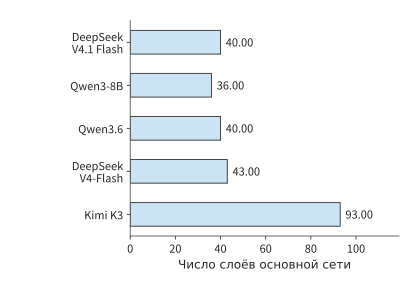
Рисунок 2-25. Число основных слоёв пяти моделей в едином линейном масштабе. Число слоёв определяет, сколько раз однотипная работа повторяется по глубине сети.
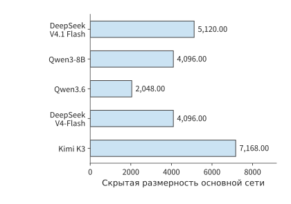
Рисунок 2-26. Размерность скрытого пространства основной части в едином линейном масштабе. Ширина признаков каждого токена определяет размер входа или выхода проекции.
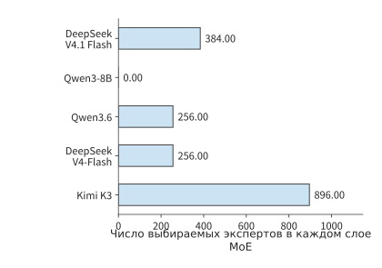
Рисунок 2-27. Число маршрутизируемых экспертов, хранящихся в каждом слое MoE. Qwen3-8B использует плотные слои прямого распространения, поэтому число маршрутизируемых экспертов равно нулю; фактическое число выбираемых экспертов на токен приведено в таблице 2-A.
Зная параметры одного типа слоя, вычисления одного вызова и состояние одного запроса, показатели всей модели можно получить взвешенным суммированием этих величин по фактическому числу слоёв каждого типа:
\(g\) обозначает тип слоя модели; слои одного типа используют одинаковые структуры внимания, сети прямого распространения и соединений. \(L_g\) — число слоёв типа \(g\). Для MoE величина \(N_g\) включает всех экспертов, а в \(F_g\) используется фактическое число строк, получаемых каждым экспертом. В таблице 2-1 уже построена плотная базовая модель Qwen3-8B; справочные таблицы в конце главы аналогичным образом подробно рассматривают Qwen3.6, DeepSeek-V3, DeepSeek V4-Flash, Kimi K3 и DeepSeek V4.1 Flash, позволяя читателю определить, из какой матрицы происходит каждая составляющая итогового значения.
При чтении можно проследить путь данных: в слой внимания какого типа поступает вход, через сеть прямого распространения какого типа он затем проходит и каким образом в итоге получаются оценки словаря. При суммировании также необходимо учитывать выборку строк эмбеддингов, конечную нормализацию и словарную голову. Каждая таблица разделена на группы внимания, прямого распространения и соединений, а также выходного интерфейса; столбец «Число слоёв / вызовов» указывает суммарный множитель для всей модели, тогда как «Матричные FLOPs» по-прежнему обозначают число операций с плавающей точкой при однократном выполнении соответствующей операции строки.
Применяя те же правила суммирования к другим моделям, можно поэлементно перечислить вычислительные ветви каждой из них. В следующей таблице для каждой модели указаны состояния контекста, веса и дополнительные вычисления, которые необходимо суммировать, а также компоненты, чаще всего упускаемые при подсчёте итогового значения. MTP, DSpark (модуль спекулятивного декодирования V4.1) и модуль обработки изображений добавляются отдельно в зависимости от области рассматриваемого выполнения.
| Ветвь модели | Состояние контекста | Веса и дополнительные вычисления | Компоненты, чаще всего упускаемые при подсчёте |
|---|---|---|---|
| DeepSeek V4.1 Flash | 4 общих глобальных KV / индекса + SWA каждого слоя + буфер сжатия и история токенов | CED, CSA2, Engram, эксперты, Single-Pass mHC | Разное число позиций для полного входа кодировщика, воспроизведения конца в декодере и глобальных проекций |
| Qwen3-8B | GQA KV | Плотный SwiGLU, выходная голова | Нематричная арифметика, диапазон позиций выходной головы |
| Qwen3.6 | Глобальный KV + рекуррентное состояние и состояние свёртки | Маршрутизируемые / общие эксперты | Линейные слои сохраняют рекуррентное состояние фиксированного размера |
| DeepSeek-V3 | Латентные переменные MLA или развёрнутый KV в зависимости от пути выполнения | Плотный FFN на первых трёх слоях, последующие MoE и общие эксперты | Позиции выполнения восходящей проекции, различия двух путей кэширования |
| DeepSeek V4-Flash | Окно + сжатие + индекс + буфер | Эксперты, компрессор, mHC | Сканирование индекса, обновление границ блоков, общая ветвь |
| Kimi K3 | MLA + KDA + свёртка | Эксперты в латентном пространстве, AttnRes | Путь развёртывания, временные межслойные состояния, отличие первого слоя |
Сначала последовательно сравним полные веса, объём вычислений за один шаг и размер состояния контекста, а затем с помощью детализированных таблиц моделей покажем, какие матрицы и состояния создают эти различия.
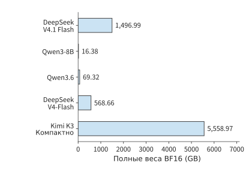
Рисунок 2-28. Объём полных весов пяти моделей при едином представлении BF16 в одинаковом линейном масштабе. Здесь учитываются все параметры, включая маршрутизируемых экспертов, из которых при каждом вызове выбирается лишь часть.
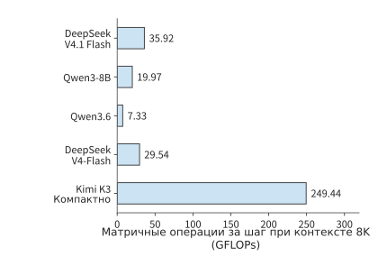
Рисунок 2-29. Объём матричных вычислений за один шаг для одного и того же одиночного запроса при уже имеющемся контексте 8K. Суммирование выполнено по путям выполнения моделей, описанным в таблице 2-C; для Kimi K3 используется компактный MLA.
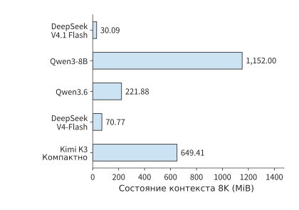
Рисунок 2-30. Состояние на запрос при одинаковом контексте 8K. Представления контекста используют BF16, а рекуррентные матрицы и буферы сжатия — точность соответствующей реализации; итоговая величина представляет собой объём, необходимый для хранения 8192 токенов контекста одного запроса.
Подробное разложение пяти моделей по матрицам приведено в справочных таблицах матриц моделей в конце главы. Далее различия в ресурсах объясняются с помощью промежуточных итогов.
Если перемножить размеры матриц и просуммировать их по числу слоёв, основная часть DeepSeek V4-Flash содержит около 284.3 миллиарда логических параметров, что при едином представлении BF16 составляет примерно 568.7 GB.
Текстовая основная часть Kimi K3 содержит около 2.78 триллиона параметров, подавляющее большинство которых находится в маршрутизируемых экспертах 92 слоёв MoE. На каждом слое для каждого токена выбираются только 16 экспертов, поэтому объём хранения полной модели и объём вычислений на один токен зависят от разных факторов: первый определяется всеми экспертами, а второй — выбранными экспертами, а также совместно выполняемыми вниманием, общими экспертами и проекциями.8
Далее параметры каждой модели разделяются на шесть непересекающихся категорий: эмбеддинги и выход, проекции внимания, плотные или общие FFN, маршрутизируемые эксперты, Engram и остальные компоненты. Сумма параметров всех категорий даёт общее число параметров модели, а пересчёт по 2 байта на параметр — объём весов на рисунке 2-28. Такое разложение наглядно показывает распределение параметров и служит основой для объяснения следующей таблицы.
Таблица 2-B. Составляющие параметров (единица измерения: миллиарды логических параметров)
| Модель | Эмбеддинги и выходная голова | Проекции внимания | Плотные / общие FFN | Маршрутизируемые эксперты | Engram | Прочее |
|---|---|---|---|---|---|---|
| DeepSeek V4.1 Flash | 1.324 | 5.126 | 1.416 | 543.582 | 196.929 | 0.118 |
| Qwen3-8B | 1.245 | 1.510 | 5.436 | 0.000 | 0.000 | \(<0.001\) |
| Qwen3.6 | 1.017 | 1.283 | 0.126 | 32.212 | 0.000 | 0.022 |
| DeepSeek V4-Flash | 1.059 | 5.085 | 1.082 | 277.025 | 0.000 | 0.081 |
| Kimi K3 (компактный MLA) | 2.349 | 36.180 | 12.882 | 2722.741 | 0.000 | 5.333 |
Категория «Прочее» включает маршрутизаторы, входные и выходные проекции латентного пространства, нормализацию, свёртки, соединения и другие параметры; проекции внимания включают проекции сжатия и индексирования DeepSeek V4-Flash. Основные параметры Qwen3-8B сосредоточены в плотном FFN, выполняемом при обработке каждого токена, тогда как Qwen3.6, V4-Flash и Kimi K3 размещают большую часть параметров в маршрутизируемых экспертах. V4.1 Flash дополнительно хранит крупную таблицу Engram; параметры её таблицы поиска, проекций и вентилей выделены в таблице отдельно. Параметры таблицы поиска увеличивают объём полной модели, но это не означает, что для каждого токена требуется обходить всю таблицу. На маршрутизируемых экспертов приходится около 93% параметров Qwen3.6 и примерно 97–98% параметров DeepSeek V4-Flash и Kimi K3. Поэтому общий объём этих трёх моделей в основном определяется совокупностью экспертов, тогда как объём экспертных вычислений на один токен зависит от экспертов, выбранных на каждом слое.
Таблица 2-C. Вычисления prefill и веса выбранных экспертов при одинаковых входных условиях
| Модель | Prefill 8K (TFLOPs) | BF16-веса маршрутизируемых экспертов, выбранных для одного токена (GiB) |
|---|---|---|
| DeepSeek V4.1 Flash | 143.95 | 15.820 |
| Qwen3-8B | 133.59 | — |
| Qwen3.6 | 52.09 | 1.875 |
| DeepSeek V4-Flash | 231.13 | 12.094 |
| Kimi K3 (компактный MLA) | 1863.46 | 90.562 |
Для обоих типов вызова принято \(B=1\): для prefill используются \(S=0,P=8192\), а для decode — \(S=8192,P=1\); во всех случаях словарная голова обрабатывает только последний токен. Объём матричных вычислений за один шаг на рисунке 2-29 суммируется при тех же условиях. Состояние на рисунке 2-30 представляет собой пространство, необходимое для хранения 8192 токенов контекста: представления контекста используют BF16, а рекуррентные состояния и буферы сжатия — FP32 в соответствии с реализацией. Для V4.1 Flash также учтён буфер истории токенов int64 (64-битных целых чисел) из эталонной реализации, который Engram использует для построения межвызовных n-gram; объём производственного глобального кэша FP4 и окна FP8 приведён в разделе 2.3.6. В последнем столбце таблицы веса маршрутизируемых экспертов, выбранных для одного токена на всех слоях, суммируются и пересчитываются в байты для BF16. Сопоставление этой таблицы с рисунками 2-28–2-30 позволяет отдельно сравнить пространство, занимаемое полной моделью, объём вычислений одного вызова и пространство, занимаемое контекстом запроса.
Для каждой модели суммирование выполняется по её собственному пути выполнения: V4.1 Flash использует CED из статьи, воспроизведение конечного окна и индексирование внутри набора кандидатов; Qwen3-8B — эффективное причинное внимание; Qwen3.6 — последовательную реализацию прямоугольного внимания (eager) и блочную линейную ветвь; DeepSeek V4-Flash — эффективное основное внимание и эталонный индекс; Kimi K3 — компактный MLA и блочный KDA. Сопоставление рисунков 2-28–2-30 показывает: Qwen3.6 хранит примерно в четыре раза больше весов, чем Qwen3-8B, но выполняет меньше матричных вычислений за шаг; веса DeepSeek V4-Flash ещё больше, однако её состояние 8K благодаря сжатию и выборке, наоборот, меньше; Kimi K3 содержит больше экспертов, имеет бо́льшую скрытую размерность и больше слоёв, поэтому ей требуется хранить больше весов и выполнять больше вычислений. Эти различия показывают, что общее число параметров, объём вычислений одного вызова и размер состояния контекста необходимо рассчитывать отдельно, исходя из соответствующих им структур.
Оценка объёма чтения за шаг по размеру состояния контекста. На каждом шаге Qwen3-8B использует 1152 MiB старого KV. Для DeepSeek V4-Flash в эталонном формате BF16, принятом на рисунке 2-30, суммарный объём чтения основного внимания и сканирования индекса составляет 27.625 MiB; кроме того, обновляется компрессор. При переходе на производственный смешанный формат из раздела 2.3.6 объём составляет 12.556 MiB. Компактный MLA Kimi K3 использует 216 MiB состояния контекста, а рекуррентную матрицу размером 414 MiB необходимо прочитать и записать, поэтому суммарный объём чтения и записи составляет 828 MiB. Для Qwen3.6 соответствующие значения равны 160 MiB для KV-кэша глобального внимания и 120 MiB для чтения и записи рекуррентных матриц. Рекуррентное состояние необходимо считывать и обновлять на каждом шаге, а представление контекста должно быть доступно текущему запросу. Поэтому даже при фиксированном размере состояния каждый шаг всё равно требует соответствующего объёма чтения и записи.
Кодирование при квантовании и метаданные совместно определяют объём весов. При едином расчёте в BF16 каждый параметр занимает 2 байта, поэтому размер весов непосредственно отражает различия в числе параметров. Фактически опубликованные checkpoint моделей (контрольные точки, то есть наборы файлов с сохранёнными параметрами) используют собственные форматы хранения: основная часть DeepSeek V4-Flash занимает около 156.02 GB, а текстовая часть Kimi K3 — около 1559.97 GB. Размер файлов совместно определяется матрицами с низкой разрядностью, параметрами в более высокой точности и метаданными формата; единая точность отражает масштаб параметров, а размер файлов — число байтов, фактически занимаемое этими параметрами. После загрузки модели также требуется пространство для преобразования формата и вычислений. В главе 5 будет рассмотрено, как формат хранения и реализация среды выполнения влияют на использование видеопамяти.
При сравнении двух таблиц также необходимо учитывать распределение задач между этапами V4.1 Flash. Полные текстовые веса V4.1 включают Engram, а все матричные вычисления prefill совместно выполняются кодировщиком, глобальными KV-проекциями декодера, воспроизведением конечного окна и выходной головой. При генерации нового токена должны выполняться обе части сети, поэтому долю экономии на prefill нельзя напрямую применять к decode.
Состав параметров в таблице 2-B объясняет объём весов, а таблица 2-C показывает, как эти параметры участвуют в одном вызове. В совокупности они позволяют разделить вопросы «сколько пространства требуется для хранения всей модели» и «сколько ресурсов требуется для обработки одного токена».1
Для prefill 8K V4.1 Flash в таблице 2-C требуется лишь 143.95 TFLOPs. В таблице 2-D эти вычисления распределены по этапам выполнения и сопоставлены с эталонным прямым проходом по всем слоям.
Таблица 2-D. Распределение входа 8K V4.1 Flash по этапам выполнения (TFLOPs)
| Этап | Эталонный прямой проход по всем слоям | CED + воспроизведение конечного окна |
|---|---|---|
| Кодировщик из 20 слоёв | 142.139 | 141.727 |
| Общий глобальный KV декодера и проекция ключей индекса | 0.044 | 0.044 |
| Вычисления запросов, прямого распространения и других компонентов 20 слоёв декодера | 140.202 | 2.175 |
| Словарная голова последнего токена | 0.001 | 0.001 |
| Итого | 282.386 | 143.947 |
Эталонный путь выполняет 40 слоёв для всех 8192 токенов и, следуя открытой реализации, сначала вычисляет прямоугольные оценки индекса, а затем применяет маскирование. В пути CED кодировщик обрабатывает весь вход, глобальные KV и ключи индекса декодера по-прежнему создаются для всего входа, основная часть декодера обрабатывает только последние 128 токенов, а последующее индексирование ограничивается набором кандидатов. Таблица учитывает всю работу текстовых матриц каждого пути; различия обусловлены одновременно числом позиций выполнения и алгоритмом индексирования.
Оба пути включают внимание, оценку маршрутизации, маршрутизируемых и общих экспертов, проекции Engram, проекции Single-Pass mHC и словарную голову. Разделение глобальных проекций декодера и вычислений запросов позволяет увидеть, как CED сокращает вычислительную цепочку, через которую проходит длинный промпт.31
Рост объёма вычислений и состояния при увеличении контекста с 8K до 1M. Вопросы и ответы по длинным документам и многошаговые задачи увеличивают стоимость доступа к контексту. Далее сохраняются условия одиночного запроса, добавления одного нового токена за вызов и обработки словарной головой только последнего токена. В сценарии 8K имеется 8192 исторических токена; в сценарии 1M — 1 048 575 исторических токенов, что вместе с текущим запросом даёт ровно 1 048 576 видимых позиций.
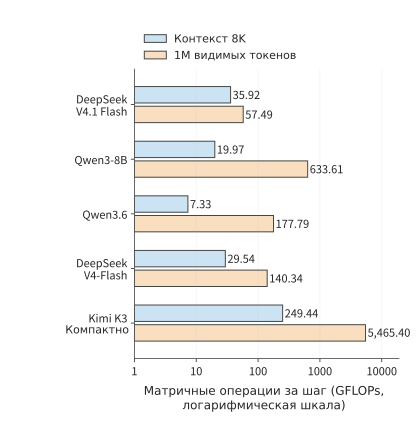
Рисунок 2-31. Объём матричных вычислений при обработке ещё одного токена в контексте 8K / 1M. Используются пути выполнения из таблицы 2-C, ось абсцисс имеет логарифмический масштаб; 1M включает текущий запрос.
В таблице 2-E отдельно суммируются вычисления оценок внимания и агрегации значений для текущего запроса; для V4-Flash и V4.1 Flash дополнительно учитываются скалярные произведения индекса. В столбцах состояния указаны контекст и фиксированное состояние перед вызовом с той же точностью, что и на рисунке 2-30. Опубликованные конфигурации Qwen3-8B и Qwen3.6 поддерживают соответственно 40 960 и 262 144 позиции; строки 1M для этих двух моделей экстраполированы при неизменной структуре для сравнения закономерностей роста.25
Таблица 2-E. Вычисления взаимодействия и объём состояния при длинном контексте
| Модель | Взаимодействие с контекстом 8K (GFLOPs) | Взаимодействие с контекстом 1M (GFLOPs) | Состояние 8K (GiB) | Состояние 1M (GiB) |
|---|---|---|---|---|
| DeepSeek V4.1 Flash | 3.66 | 25.23 | 0.029 | 3.138 |
| Qwen3-8B | 4.83 | 618.48 | 1.125 | 144.000 |
| Qwen3.6 | 1.34 | 171.80 | 0.217 | 20.060 |
| DeepSeek V4-Flash | 3.00 | 113.80 | 0.069 | 6.735 |
| Kimi K3 (компактный MLA) | 41.08 | 5257.04 | 0.634 | 27.423 |
Глобальный KV V4.1 Flash имеет только четыре независимых источника, поэтому при увеличении контекста не требуется добавлять отдельный экземпляр для каждого из 40 слоёв. Основное внимание каждого слоя использует не более 128 локальных токенов и 512 глобальных элементов; первый слой Full декодера создаёт набор кандидатов, после чего каждый из четырёх слоёв Reindex сканирует не более 16 384 элементов-кандидатов. Три индексатора кодировщика и первый индексатор декодера всё равно должны сканировать растущую глобальную историю, поэтому объём вычислений продолжает увеличиваться; межслойное совместное использование и иерархическое индексирование изменяют темп роста. При 1M объём взаимодействия с контекстом составляет 25.23 GFLOPs, а полный объём матричных вычислений за один шаг — 57.49 GFLOPs.
V4-Flash продолжает использовать две гранулярности сжатия CSA и HCA: верхняя граница выборки для основного внимания CSA остаётся неизменной, но сканирование индекса растёт вместе с историей; HCA считывает все завершённые крупнозернистые элементы. При 1M объём взаимодействия с контекстом составляет 113.80 GFLOPs, а полный объём матричных вычислений за один шаг — 140.34 GFLOPs. При более коротком контексте более крупная основная часть V4.1 Flash увеличивает объём вычислений проекций и экспертов; лишь при достаточно длинной истории меньшее число индексаторов и иерархический выбор кандидатов компенсируют эту дополнительную работу.
В 69 слоях KDA модели Kimi K3 сохраняется фиксированное рекуррентное состояние, тогда как 24 слоя MLA продолжают обращаться к растущей истории контекста. Компактный MLA уменьшает объём кэша, но не устраняет вычисления между запросом и историческими токенами; при 1M это взаимодействие достигает 5257.04 GFLOPs, а вся модель — 5465.40 GFLOPs. При оценке архитектуры для длинного контекста следует отдельно проверять, какой объём состояния хранится, к каким позициям выполняется доступ и сколько дополнительной работы требуется для индексирования и обновления состояния.
В унифицированном расчёте также сохранён сценарий 200K: полный объём матричных вычислений за один шаг составляет 40.21 GFLOPs для V4.1 Flash и 50.48 GFLOPs для V4-Flash. При 1M различие в объёме вычислений между ними становится ещё больше, поэтому для демонстрации ценности архитектуры при длинном контексте в основном тексте используется 1M.
2.6.2 Число параметров, числовая точность и ограничения по ёмкости¶
Если свести рассчитанные по отдельности веса модели и состояние каждого запроса в одну таблицу использования видеопамяти, можно определить, сколько запросов одновременно помещается на одной карте и сколько места высвобождает квантование весов.
Для одной карты сначала из общей ёмкости вычитаются веса, рабочая область и прочие фиксированные резервы; лишь оставшееся пространство можно использовать для состояний запросов. В упрощённом случае, когда запросы имеют одинаковую длину и KV каждого из них хранится независимо, получаем:
В числителе находится пространство, доступное запросам после вычета постоянно размещённых данных, а в знаменателе — размер состояния одного запроса. Для каждого дополнительного запроса необходимо выделить соответствующее пространство под состояние; если остатка недостаточно для полного состояния, добавить запрос нельзя, поэтому результат округляется вниз. Рекуррентные состояния и состояния свёртки также относятся к данным каждого запроса и учитываются в знаменателе вместе с KV.
Например, при запуске Qwen3-8B BF16 на RTX 4090 с 24 GB видеопамяти веса занимают \(16{,}381{,}470{,}720\) байт, под рабочую область резервируется 2 GiB, а контекст 8K каждого запроса занимает 1.125 GiB. Число помещающихся запросов равно
При увеличении контекста до 16K каждый запрос занимает 2.25 GiB, поэтому в том же пространстве помещаются лишь два запроса; при уменьшении до 4K помещаются девять. Число запросов изменяется целыми скачками, поскольку оставшееся пространство должно вмещать полное состояние запроса, а размещение лишь его части не имеет смысла.
Таким образом, объём сохраняемой истории становится решением, влияющим как на приложение, так и на систему. Если приложение сохранит дополнительный фрагмент материала, модель сможет и дальше обращаться к нему, однако сервису придётся выделить больше пространства под состояние каждого запроса. Рассмотренные в разделе 2.3 GQA, MLA и рекуррентное представление дополнительно меняют способ хранения этой информации. Архитектуру модели, организацию контекста и допустимый параллелизм можно сопоставить в рамках единого бюджета, а затем с помощью тестов на реальных задачах определить, какие варианты обеспечивают требуемое качество ответов.
Чтобы оценить, сколько пространства высвобождает квантование, рассмотрим более крупную модель DeepSeek-R1-Distill-Llama-70B. В разделе 1.2.3 уже были приведены следующие значения: 141.107 GB для весов BF16, 73.726 GB для весов с групповым 8-bit-квантованием и 2.5 GiB для BF16 KV одного запроса с 8192 токенами. Если при той же схеме группировки сохранить более высокую точность для эмбеддингов, выходной головы, нормализации и других компонентов, а также учесть пространство для scale и заполнения в конце при упаковке, размер 4-bit-варианта составит около 39.500 GB.
В 39.500 GB для 4-bit-варианта входят низкоразрядные матрицы, параметры, по-прежнему использующие высокую точность, а также затраты на scale и упаковку, поэтому этот объём больше результата, полученного простым пересчётом всех параметров по половине байта. На H100 SXM с 80 GB видеопамяти в десятичном представлении и фиксированным резервом 2 GiB 8-bit-вариант позволяет разместить один запрос с контекстом 8K, а 4-bit-вариант — 14 запросов. При увеличении контекста с 8K до 32K объём KV каждого запроса возрастает в четыре раза, и 4-bit-вариант может одновременно вместить лишь три запроса. Пространство, высвобождённое благодаря сжатию весов, позволяет хранить контексты большего числа запросов, но чем длиннее каждый контекст, тем меньше запросов помещается одновременно.24
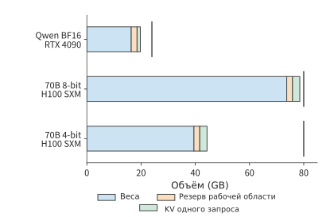
Рис. 2-32. Ёмкость весов, фиксированного резерва и KV одного запроса по отдельности. Короткими вертикальными линиями отмечены ёмкости RTX 4090 в 24 GB и H100 SXM в 80 GB; KV использует BF16 и длину контекста 8192, фиксированный резерв составляет 2 GiB. «Резерв рабочей области» означает временное пространство, необходимое для выполнения, а «KV одного запроса» — кэш контекста одного запроса с 8192 токенами.
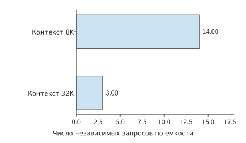
Рис. 2-33. Число независимых запросов, которые 4-bit-вариант 70B может одновременно разместить на одной H100 SXM с 80 GB при увеличении длины контекста с 8K до 32K. Состояние каждого запроса увеличивается, поэтому в оставшемся пространстве помещается меньше запросов.
Тем же способом можно анализировать и более крупные конфигурации. Веса модели 235B в формате BF16 занимают около 470 GB, что превышает суммарные 192 GB восьми RTX 4090, тогда как восемь H100 SXM в одном сервере HGX суммарно предоставляют 640 GB. После вычета весов у последнего остаётся около 170 GB для состояний запросов, рабочей области и данных, которые после распределения по нескольким картам приходится дублировать на нескольких из них. Например, на каждой карте отдельно хранятся параметры нормализации и маршрутизатор, а при распределении четырёх KV-голов между восемью картами KV каждой головы хранится на двух картах. В главе 6 эти статьи бюджета будут рассчитаны для каждой карты с учётом распределения функций модели между картами.
Ёмкость определяет минимальное число карт для одного экземпляра, а длина и параллелизм запросов — объём работы, который должен выполнять экземпляр. Более низкая разрядность высвобождает пространство, более короткий контекст позволяет одновременно держать в памяти больше запросов, а повторное использование данных внутри батча меняет стоимость их выполнения. Поэтому при выборе конфигурации развёртывания необходимо последовательно учитывать ёмкость, объём обращений и объём вычислений; в главе 3 дополнительно будут рассмотрены поступление запросов и ограничения по времени.
Упражнение 2-7 (основное): определение числа помещающихся запросов по ёмкости видеопамяти
Возьмите RTX 4090 с 24 GB видеопамяти, зарезервируйте 2 GiB под рабочую область и используйте для весов Qwen3-8B BF16 точное значение из таблицы. Определите максимальное число одновременно помещающихся запросов для контекстов 4K, 8K и 16K; затем для случая 8K увеличьте резерв рабочей области до 3 GiB и повторите расчёт. После этого возьмите из таблицы значение 39.500 GB для 4-bit-весов модели 70B, замените карту на RTX 6000 Ada с 48 GB видеопамяти, оставив резерв равным 2 GiB, и определите число запросов для контекстов 8K и 32K. Сначала сопоставьте требования к ёмкости для весов, рабочей области и KV, а затем по оставшейся видеопамяти вычислите число помещающихся запросов.
Можно решить и обратную задачу: по заданным ускорителю и целевым характеристикам сервиса определить пространство, остающееся для модели. Пусть доступная ёмкость каждой карты равна \(C\), фиксированный резерв рабочей области — \(M_0\), KV каждого запроса — \(K\), параллелизм — \(B\), а каждый параметр занимает \(b_W\) байт. Если пренебречь прочими постоянно размещёнными объектами, верхняя граница числа параметров для одной карты равна
Сначала определяется размер состояния, необходимый сервису, а затем вычисляется пространство, остающееся для весов. Возьмём RTX 4090 с ёмкостью 24 GB, рабочую область размером 2 GiB и четыре запроса по 8192 токена, для каждого из которых KV, как и у Qwen3-8B, занимает 1.125 GiB. При 2 байтах на параметр в формате BF16 оставшееся пространство вмещает не более чем около 8,51 млрд параметров.28 На рис. 2-34 сначала вычитается состояние сервиса, после чего выделяется бюджет для весов.
При изменении архитектуры модели одновременно меняются бюджеты весов и состояний. Увеличение числа слоёв или KV-голов повышает \(K\) каждого запроса, сокращая пространство, остающееся для весов; развёртывание на нескольких картах увеличивает общую ёмкость, но одновременно повышает объём коммуникаций. Описанный в отчёте Llama 3 инференс модели 405B в формате BF16 выполнялся на двух серверах с 16 картами H100, поскольку требуемая ёмкость превышала объём видеопамяти одного сервера.27 Поэтому число параметров модели, структуру состояния и число карт необходимо выбирать совместно.
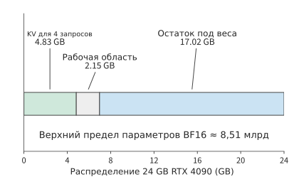
Рис. 2-34. Обратный расчёт бюджета весов по ускорителю. Из 24 GB RTX 4090 сначала резервируется пространство под KV четырёх запросов с контекстом 8K и рабочую область размером 2 GiB; остаток задаёт верхнюю границу числа параметров BF16. Все значения ёмкости на схеме приведены в десятичных GB.
2.6.3 Сравнение моделей при разных параметрах запроса¶
Наконец, объединим ёмкость, цепочку вызовов и качество выполнения задачи. Сначала исключим конфигурации с недостаточной ёмкостью с учётом ёмкости каждой карты, затем просуммируем работу по обработке запроса в соответствии с фактическим способом вычислений каждой модели и, наконец, проверим, способна ли модель выполнить целевую задачу.
При сравнении полных моделей можно исходить из двух вариантов входных данных. Если зафиксировать \(S,P,G,B\), получим требования к ресурсам при одинаковой длине вызовов, что позволяет увидеть структурные различия. Если зафиксировать текст и задачу, то сначала получим длину входа с помощью токенизатора каждой модели, а затем проверим выход. Эти два вида сравнения соответственно отвечают на вопросы: «Как выполняются вычисления при одинаковом количестве позиций?» и «Как выполняется одна и та же задача?».
Сначала сравним требования к ресурсам при одинаковой длине входа и выхода. Пусть \(S=0,P=128,G=4,B=1\): модель выполняет один prefill и три decode, а в конце сохраняет 131 обработанную позицию. Суммирование объёма матричных вычислений этих вызовов даёт следующую таблицу.9
| Модель | Матричные вычисления полного запроса (TFLOPs) | Использованный в расчёте способ реализации |
|---|---|---|
| DeepSeek V4.1 Flash | 4.14 | CED + повторное воспроизведение конечного окна, индексирование внутри множества кандидатов |
| Qwen3-8B | 1.83 | эффективное причинное внимание |
| Qwen3.6 | 0.66 | прямоугольное полное внимание и блочная линейная ветвь |
| DeepSeek V4-Flash | 3.40 | эффективное основное внимание и эталонный индекс |
| Kimi K3 (компактный MLA) | 27.16 | компактный MLA и блочный KDA; для decode используется рекуррентный KDA |
Эта таблица использует тот же путь выполнения, что и таблица 2-C: для Kimi K3 везде применяется компактный MLA, а восходящая проекция переносится на сторону запросов и агрегации. Вход V4.1 Flash содержит ровно 128 токенов, и все они попадают в окно повторного воспроизведения декодера, поэтому в этом коротком запросе отсутствует характерная для длинного промпта выгода от пропуска большого числа позиций декодера. Для полного запроса по одному и тому же выбранному пути суммируются prefill и три decode, а контекст увеличивается со 128 до 131 позиции; объём каждого вида вычислений определяется как формами матриц, так и представлением состояния на этом пути.
После перехода от одного вызова к полному запросу роль входа и выхода становится понятнее. Увеличение \(P\) в основном повышает объём однократной обработки входа, а также длину контекста в начале последующих decode. Увеличение \(G\) приводит к многократному выполнению проекций, экспертов и выходной головы, а также к многократному чтению контекста. Поэтому длинный вход с коротким выходом и короткий вход с длинным выходом предъявляют разные требования к различным ресурсам. В главе 3 будет рассмотрена системная нагрузка при непрерывном поступлении запросов этих двух типов.
Упражнение 2-8 (расширенное): как повторное использование префикса и изменение входа влияют на объём вычислений модели
Общая длина входа в одном раунде составляет 1443 токена, из которых первые 1392 найдены в кэше; модель возвращает 128 токенов. Найдите значения \(S,P,G,n_d\), длину контекста после завершения запроса и размер добавленного в этом раунде KV. Насколько повторное использование кэша сокращает число строк проекций и число эффективных пар запрос—ключ по сравнению с полным повторным вычислением? Если изменить содержимое 501-го входного токена, заново определите максимальную длину повторно используемого префикса и длину нового входа.
Теперь рассмотрим второй вид сравнения — при фиксированном тексте. В этом случае разные токенизаторы создают входы разной длины. Например, в восьми задачах на поиск словосочетаний Qwen3-8B и DeepSeek V4-Flash правильно нашли целевые словосочетания, но короткий текст в Qwen занимал 523 или 524 токена, а в DeepSeek V4-Flash — 501 токен; более длинный текст занимал соответственно 2121 или 2122 токена и 2036 токенов. Использование одного и того же текста сохраняет неизменным содержание задачи, а количество токенов каждой модели определяет фактическую форму входа.
Таким образом, при сравнении моделей нужно одновременно ответить на два вопроса: способны ли они выполнить одну и ту же задачу и сколько ресурсов для этого требуется. Только если сначала оценить ответы по одинаковым критериям, а затем подставить соответствующую длину входа каждой модели в таблицу моделей, можно связать структурные различия с практическим применением.10
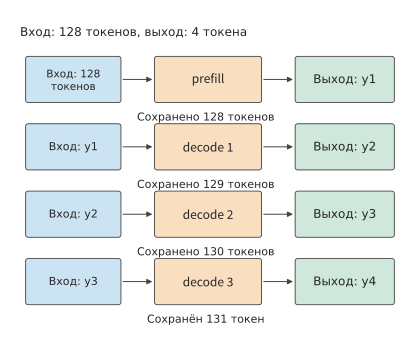
Рисунок 2-35. Последовательность вызовов при генерации четырёх выходных токенов. prefill обрабатывает 128 входных токенов и создаёт первый выходной токен, после чего каждый из трёх decode передаёт предыдущий выход обратно в модель; в итоге сохраняется 131 токен.
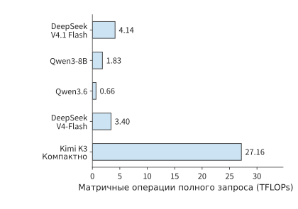
Рисунок 2-36. Объём матричных вычислений, необходимый каждой модели для обработки одного и того же запроса с входом из 128 токенов и выходом из четырёх токенов. Область выполнения моделей и пути кэша заданы в условиях этого раздела; показан объём вычислений, накопленный по всем вызовам.
Упражнение 2-9 (расширенное): выбор модели с учётом ёмкости, вычислительных требований и качества выполнения задачи
Используя рисунки 2-28–2-30 и таблицу 2-C, отдельно укажите для каждой модели требования к полным весам, состоянию 8K, одному шагу decode и prefill для 8K. Модель развёртывается на одной H100 SXM с 80 GB видеопамяти, из которых 2 GiB зарезервированы под рабочую область; веса представлены в BF16. Сначала определите, какие модели полностью помещаются на одной карте. Затем рассмотрите многокарточное развёртывание и укажите, какие параметры времени и обмена данными потребуется получить из следующих глав. Измените число выходных токенов \(G\) на 1 и заново вычислите количество вызовов prefill и decode. Наконец, сформулируйте критерий качества для задачи поиска словосочетания и объясните, на какие вопросы отвечают сравнение при одинаковом числе токенов и сравнение при одинаковом тексте.
В этой главе, начиная с вычислительного графа, мы последовательно рассчитали потребность полного запроса в ресурсах. Внимание определяет способ хранения контекста и доступа к нему, MoE — выбор весов при каждом вычислении, а глубина сети и способ соединения — порядок вычислений и потребность во временном хранилище. В следующей главе будут добавлены распределение длин запросов, время их поступления, вызовы инструментов, обучение и обучение с подкреплением (RL), чтобы проанализировать, как эти вычисления со временем формируют системную нагрузку.
Заблуждения и ловушки¶
Заблуждение: больше параметров — значит, объём вычислений на каждый токен обязательно выше. Общее число параметров определяет ёмкость полной модели; выбранные эксперты MoE, тип механизма внимания и форма вызова определяют текущий объём работы. Сопоставьте таблицу 2-A, таблицу 2-B и рисунок 2-29 и отдельно объясните, от каких факторов зависят число параметров и объём вычислений.
Заблуждение: если объём KV-кэша сократился до четверти исходного, объём вычислений механизма внимания также уменьшится пропорционально. GQA использует совместное представление контекста, но каждая голова запросов по-прежнему вычисляет оценки отдельно; MLA изменяет ширину контекста, а также место выполнения восходящей проекции. Сначала определите изменённые матрицы и состояния, а затем рассчитайте остальной объём работы.
Заблуждение: если размер состояния фиксирован, затратами на доступ можно пренебречь. Фиксированную рекуррентную матрицу всё равно необходимо обновлять; кроме того, на этапе prefill могут возникать временные блочные состояния. Ёмкость, совокупный объём обращений и пиковый размер рабочей области отвечают на разные вопросы.
Заблуждение: одинаковое число входных токенов позволяет объективно сравнить возможности моделей. Числа входных и выходных токенов подходят для сравнения структуры потребления ресурсов; при выполнении одной и той же текстовой задачи также необходимо зафиксировать оценивание, качество и условия выполнения, допуская при этом, что разные токенизаторы создают последовательности разной длины.
Упражнения и воспроизведение результатов главы¶
Упражнения 2-2, 2-5 и 2-7 — основные; остальные предназначены для анализа особых случаев и применения методов к другим моделям. Сначала самостоятельно сделайте прогнозы и выполните выкладки, а затем сверьте их с сопутствующими вычислениями. Команды для вычислений запускаются из корня репозитория; полные варианты приведены в расширенных материалах к главе 2.
| Соответствующая тема | Точка входа для локального воспроизведения вычислений |
|---|---|
| Зависимости в последовательности и эквивалентность кэширования | python3 calculations/calc.py sequence-dependencies --format md |
| Прямой проход и эксперты Qwen3.6 | python3 calculations/calc.py qwen36-forward --format md |
| Полное матричное вычисление DeepSeek V4.1 Flash | python3 calculations/calc.py v41-forward --tokens 8192 --execution ced --format md |
| Эталонный путь через все слои DeepSeek V4.1 Flash | python3 calculations/calc.py v41-forward --tokens 8192 --execution reference --format md |
| Сравнение пяти моделей и полный запрос | python3 calculations/reproduce_ch02.py |
| Декомпозиция состояния DeepSeek V4-Flash | python3 calculations/calc.py state --model deepseek-v4-flash --length 8192 |
| Состояние и блочное выполнение Kimi K3 | python3 calculations/calc.py k3-kda-chunk --tokens 8192 |
| Гранулярность экспертов | python3 calculations/calc.py qwen235-expert-granularity --format md |
| Однократный MTP | python3 calculations/calc.py v4-mtp-forward --format md |
| Подстановка полей известной трассы | python3 calculations/calc.py trace-resource-bridge --format md |
| Сравнение запросов для пяти моделей | python3 calculations/calc.py request-model-comparison --format md |
Иллюстрации к этой главе, данные вычислений и методы реконструкции приведены в каталоге иллюстраций. В материалах в конце главы описаны архитектура и устройство каждой модели.
Справочные таблицы матриц моделей¶
Эти таблицы позволяют перейти от суммарных показателей всей модели к конкретным матрицам. Сначала определите модель и ветвь выполнения, затем умножьте FLOPs одной матричной операции на число слоёв; для маршрутизируемых экспертов также необходимо суммировать фактическое число полученных ими входных строк. Базовые показатели Qwen3-8B в таблице 2-1 приведены в разделе 2.1.4.
Таблица 2-2. Qwen3.6-35B-A3B: расчёт потребления ресурсов модулями гибридного внимания и MoE
Основная часть состоит из 40 слоёв: 10 слоёв выбирают ветвь полного внимания, а 30 — ветвь линейного внимания; после этого слои обоих типов выполняют MoE. Для каждого токена выбираются 8 из 256 маршрутизируемых экспертов, а также один общий эксперт. Выход QKV линейной ветви разделён на размерности 2048, 2048 и 4096; её \(Q\) и \(K\) переиспользуются в соответствии с группировкой голов значений.
Вход модели
| Модуль и назначение | Вход → выход (число строк × ширина) | Матрица весов (ширина входа × ширина выхода) | FLOPs матрицы | Число слоёв/вызовов |
|---|---|---|---|---|
| Выбор строк эмбеддингов токенов | \(m\) ID → \(m\times2048\) | Таблица \(248320\times2048\) | 0; обращения для выбора строк учитываются отдельно | 1 |
Ветвь полного внимания
| Модуль и назначение | Вход → выход (число строк × ширина) | Матрица весов (ширина входа × ширина выхода) | FLOPs матрицы | Число слоёв/вызовов |
|---|---|---|---|---|
| Полное внимание: \(Q\) и выходной гейтинг | \(m\times2048\to m\times8192\) | \(2048\times8192\) | \(2\times m\times2048\times8192\) | 10 |
| Полное внимание: \(K\), \(V\) | \(m\times2048\to m\times512\) | \(2048\times512\), всего 2 | \(2\times 2\times m\times2048\times512\) | 10 |
| Полное внимание: взаимодействие с контекстом | 16 голов \(Q\), 2 головы KV, ширина головы \(256\) | Без дополнительных весов | \(4\times16\times256\times N_{\mathrm{pair}}\) | 10 |
| Полное внимание: выходная проекция | \(m\times4096\to m\times2048\) | \(4096\times2048\) | \(2\times m\times4096\times2048\) | 10 |
Ветвь линейного внимания
| Модуль и назначение | Вход → выход (число строк × ширина) | Матрица весов (ширина входа × ширина выхода) | FLOPs матрицы | Число слоёв/вызовов |
|---|---|---|---|---|
| Линейное внимание: совместная проекция QKV | \(m\times2048\to m\times8192\) | \(2048\times8192\) | \(2\times m\times2048\times8192\) | 30 |
| Линейное внимание: выходной гейтинг \(z\) | \(m\times2048\to m\times4096\) | \(2048\times4096\) | \(2\times m\times2048\times4096\) | 30 |
| Линейное внимание: управляющие величины \(a\), \(b\) | \(m\times2048\to m\times32\) | \(2048\times32\), всего 2 | \(2\times 2\times m\times2048\times32\) | 30 |
| Линейное внимание: свёртка и рекуррентное обновление delta | \(Q,K\): по \(16\times128\); \(V\): \(32\times128\) | Свёртка: 8192 канала, ширина ядра 4 | Рекуррентное обновление: \(O(m\times32\times128^2)\); блочный алгоритм учитывается отдельно | 30 |
| Линейное внимание: выходная проекция | \(m\times4096\to m\times2048\) | \(4096\times2048\) | \(2\times m\times4096\times2048\) | 30 |
Общая для всех слоёв ветвь экспертов
| Модуль и назначение | Вход → выход (число строк × ширина) | Матрица весов (ширина входа × ширина выхода) | FLOPs матрицы | Число слоёв/вызовов |
|---|---|---|---|---|
| На каждом слое: оценка маршрутизации | \(m\times2048\to m\times256\) | \(2048\times256\) | \(2\times m\times2048\times256\) | 40 |
| Маршрутизируемый эксперт \(e\): преобразование в выбранной ветви | \(t_e\times2048\to t_e\times512\to t_e\times2048\) | Две матрицы \(2048\times512\); одна \(512\times2048\) | \(6\times t_e\times2048\times512\) | 40 |
| Общий эксперт: общее преобразование всех токенов | \(m\times2048\to m\times512\to m\times2048\) | Две матрицы \(2048\times512\); одна \(512\times2048\) | \(6\times m\times2048\times512\) | 40 |
| Гейтинг общего эксперта | \(m\times2048\to m\times1\) | \(2048\times1\) | \(2\times m\times2048\times1\) | 40 |
Выходной интерфейс
| Модуль и назначение | Вход → выход (число строк × ширина) | Матрица весов (ширина входа × ширина выхода) | FLOPs матрицы | Число слоёв/вызовов |
|---|---|---|---|---|
| Выходная голова словаря (один раз в конце) | \(m_{\mathrm{out}}\times2048\to m_{\mathrm{out}}\times248320\) | \(2048\times248320\) | \(2\times m_{\mathrm{out}}\times2048\times248320\) | 1 |
При суммировании умножайте формулу каждой строки на число слоёв в последнем столбце; для маршрутизируемых экспертов также необходимо просуммировать фактическое число полученных каждым экспертом строк \(t_e\). Финальная нормализация выполняется один раз, а внутрислойная нормализация, активация, обработка позиций и обновление состояния выполняются в соответствующих ветвях.
При чтении таблицы сначала определите, использует ли слой линейное или полное внимание, выберите соответствующую группу строк, а затем добавьте общую часть MoE. Линейное внимание определяет способ хранения контекста, а MoE — какие веса используются для текущего токена; оба механизма могут применяться одновременно. A3B обозначает номинальный объём активированных параметров, однако все эксперты в совокупности по-прежнему входят в постоянно размещённую модель.21
Таблица 2-3. DeepSeek-V3: MLA и плотные/экспертные сети прямого распространения
DeepSeek-V3 состоит из 61 слоя: первые три используют плотную FFN, а в каждом из последующих 58 слоёв для каждого токена выбираются 8 маршрутизируемых экспертов и выполняется один общий эксперт. Ниже FLOPs MLA рассчитываются для развёрнутого пути: скрытая переменная каждого токена посредством восходящей проекции преобразуется в \(K\) и \(V\) каждой головы, а 64-мерное позиционное представление конкатенируется с \(K\). Запросы и ключи совместно участвуют в вычислении зависящих от позиции оценок, а \(V\) используется для агрегации содержимого.
Вход модели
| Модуль и назначение | Вход → выход (число строк × ширина) | Матрица весов (ширина входа × ширина выхода) | FLOPs матрицы | Число слоёв/вызовов |
|---|---|---|---|---|
| Выбор строк эмбеддингов токенов | \(m\) ID → \(m\times7168\) | Таблица \(129280\times7168\) | 0; обращения для выбора строк учитываются отдельно | 1 |
Внимание MLA
| Модуль и назначение | Вход → выход (число строк × ширина) | Матрица весов (ширина входа × ширина выхода) | FLOPs матрицы | Число слоёв/вызовов |
|---|---|---|---|---|
| Нисходящая проекция запросов: формирование низкоранговых запросов | \(m\times7168\to m\times1536\) | \(7168\times1536\) | \(2\times m\times7168\times1536\) | 61 |
| Восходящая проекция запросов: развёртывание 128 голов | \(m\times1536\to m\times24576\) | \(1536\times24576\) | \(2\times m\times1536\times24576\) | 61 |
| Нисходящая проекция KV: 512-мерная скрытая переменная и 64-мерная позиционная ветвь | \(m\times7168\to m\times576\) | \(7168\times576\) | \(2\times m\times7168\times576\) | 61 |
| Восходящая проекция KV: развёртывание \(K\), \(V\) каждой головы | \(m\times512\to m\times32768\) | \(512\times32768\) | \(2\times m\times512\times32768\) | 61 |
| Развёрнутое MLA: вычисление оценок и агрегация значений | 128 голов; ширина Q/K — \(192\), ширина \(V\) — \(128\) | Без дополнительных весов | \(2\times128\times(192+128)N_{\mathrm{pair}}\) | 61 |
| Выходная проекция внимания | \(m\times16384\to m\times7168\) | \(16384\times7168\) | \(2\times m\times16384\times7168\) | 61 |
Ветвь прямого распространения
| Модуль и назначение | Вход → выход (число строк × ширина) | Матрица весов (ширина входа × ширина выхода) | FLOPs матрицы | Число слоёв/вызовов |
|---|---|---|---|---|
| Первые три слоя: плотная сеть прямого распространения | \(m\times7168\to m\times18432\to m\times7168\) | Две матрицы \(7168\times18432\); одна \(18432\times7168\) | \(6\times m\times7168\times18432\) | 3 |
| Последующие 58 слоёв: оценка маршрутизации | \(m\times7168\to m\times256\) | \(7168\times256\) | \(2\times m\times7168\times256\) | 58 |
| Маршрутизируемый эксперт \(e\) | \(t_e\times7168\to t_e\times2048\to t_e\times7168\) | Две матрицы \(7168\times2048\); одна \(2048\times7168\) | \(6\times t_e\times7168\times2048\) | 58 |
| Общий эксперт | \(m\times7168\to m\times2048\to m\times7168\) | Две матрицы \(7168\times2048\); одна \(2048\times7168\) | \(6\times m\times7168\times2048\) | 58 |
Выходной интерфейс
| Модуль и назначение | Вход → выход (число строк × ширина) | Матрица весов (ширина входа × ширина выхода) | FLOPs матрицы | Число слоёв/вызовов |
|---|---|---|---|---|
| Выходная голова словаря (один раз в конце) | \(m_{\mathrm{out}}\times7168\to m_{\mathrm{out}}\times129280\) | \(7168\times129280\) | \(2\times m_{\mathrm{out}}\times7168\times129280\) | 1 |
При суммировании умножайте формулу каждой строки на число слоёв в последнем столбце; для маршрутизируемых экспертов также необходимо просуммировать фактическое число полученных каждым экспертом строк \(t_e\). Финальная нормализация выполняется один раз, а внутрислойная нормализация, активация, обработка позиций и обновление состояния выполняются в соответствующих ветвях.
V3 объединяет два способа экономии ресурсов: MLA представляет контекст с помощью низкоранговых скрытых переменных, а MoE позволяет токену выполнять лишь часть экспертов. DeepSeek V4-Flash дополнительно изменяет организацию контекста: недавние позиции сохраняются в окне, а долговременный контекст — с разными коэффициентами сжатия. В следующей таблице модулей эти типы контекста представлены отдельно.7
Таблица 2-4. DeepSeek V4-Flash: избирательный доступ к контексту и экспертные вычисления
43 слоя включают 2 слоя только с оконным вниманием, 21 слой CSA и 20 слоёв HCA; для каждого токена выбираются 6 маршрутизируемых экспертов, а также один общий эксперт. \(A\) — эффективное число пар «запрос — ключ» основного внимания для всех запросов этого слоя, а \(I\) — число пар «запрос — ключ», фактически просканированных индексом; число голов не включено ни в одну из этих величин. Восемь групп сгруппированной выходной проекции обрабатывают восемь разных срезов. Проекция сжатия CSA сначала создаёт представления размерностью 1024/256, содержащие перекрывающиеся ветви, а затем отдельно формирует 512-мерное представление контекста основного внимания и 128-мерную индексную запись.
Вход модели
| Модуль и назначение | Вход → выход (число строк × ширина) | Матрица весов (ширина входа × ширина выхода) | FLOPs матрицы | Число слоёв/вызовов |
|---|---|---|---|---|
| Выбор строк эмбеддингов токенов | \(m\) ID → \(m\times4096\) | Таблица \(129280\times4096\) | 0; обращения для выбора строк учитываются отдельно | 1 |
Проекции внимания на всех слоях
| Модуль и назначение | Вход → выход (число строк × ширина) | Матрица весов (ширина входа × ширина выхода) | FLOPs матрицы | Число слоёв/вызовов |
|---|---|---|---|---|
| Все слои: нисходящая проекция запросов | \(m\times4096\to m\times1024\) | \(4096\times1024\) | \(2\times m\times4096\times1024\) | 43 |
| Все слои: восходящая проекция запросов | \(m\times1024\to m\times32768\) | \(1024\times32768\) | \(2\times m\times1024\times32768\) | 43 |
| Все слои: общие KV | \(m\times4096\to m\times512\) | \(4096\times512\) | \(2\times m\times4096\times512\) | 43 |
| Основное внимание: окно и выбранный сжатый контекст | 64 головы, по \(512\) измерений в каждой | Без дополнительных весов | \(4\times64\times512\times A\) | 43 |
| Все слои: сгруппированная низкоранговая выходная проекция | \(m\times4096\to m\times1024\) | \(4096\times1024\), всего 8 | \(8\times 2\times m\times4096\times1024\) | 43 |
| Все слои: выходная проекция после конкатенации | \(m\times8192\to m\times4096\) | \(8192\times4096\) | \(2\times m\times8192\times4096\) | 43 |
Операции, специфичные для CSA
| Модуль и назначение | Вход → выход (число строк × ширина) | Матрица весов (ширина входа × ширина выхода) | FLOPs матрицы | Число слоёв/вызовов |
|---|---|---|---|---|
| CSA: сжатие контекста и гейтинг основного внимания | \(m\times4096\to m\times1024\) | \(4096\times1024\), всего 2 | \(2\times 2\times m\times4096\times1024\) | 21 |
| CSA: индексные запросы | \(m\times1024\to m\times8192\) | \(1024\times8192\) | \(2\times m\times1024\times8192\) | 21 |
| CSA: веса индексных голов | \(m\times4096\to m\times64\) | \(4096\times64\) | \(2\times m\times4096\times64\) | 21 |
| CSA: сжатое содержимое индекса и гейтинг | \(m\times4096\to m\times256\) | \(4096\times256\), всего 2 | \(2\times 2\times m\times4096\times256\) | 21 |
| CSA: сканирование и выбор по индексу | 64 индексные головы, по \(128\) измерений в каждой | Без дополнительных весов | Скалярные произведения: \(2\times64\times128\times I\); взвешивание и top-k учитываются отдельно | 21 |
Операции, специфичные для HCA
| Модуль и назначение | Вход → выход (число строк × ширина) | Матрица весов (ширина входа × ширина выхода) | FLOPs матрицы | Число слоёв/вызовов |
|---|---|---|---|---|
| HCA: сжатие контекста и гейтинг основного внимания | \(m\times4096\to m\times512\) | \(4096\times512\), всего 2 | \(2\times 2\times m\times4096\times512\) | 20 |
Эксперты и соединения на каждом слое
| Модуль и назначение | Вход → выход (число строк × ширина) | Матрица весов (ширина входа × ширина выхода) | FLOPs матрицы | Число слоёв/вызовов |
|---|---|---|---|---|
| Оценка маршрутизации | \(m\times4096\to m\times256\) | \(4096\times256\) | \(2\times m\times4096\times256\) | 43 |
| Маршрутизируемый эксперт \(e\) | \(t_e\times4096\to t_e\times2048\to t_e\times4096\) | Две матрицы \(4096\times2048\); одна \(2048\times4096\) | \(6\times t_e\times4096\times2048\) | 43 |
| Общий эксперт | \(m\times4096\to m\times2048\to m\times4096\) | Две матрицы \(4096\times2048\); одна \(2048\times4096\) | \(6\times m\times4096\times2048\) | 43 |
| mHC: объединение и смешивание остаточных связей | \(m\times4\times4096\leftrightarrow m\times4096\) | Параметры проекции смешивания и нормализации | Матрицы смешивания, скаляры и специальные функции суммируются отдельно | 43 |
Выходной интерфейс
| Модуль и назначение | Вход → выход (число строк × ширина) | Матрица весов (ширина входа × ширина выхода) | FLOPs матрицы | Число слоёв/вызовов |
|---|---|---|---|---|
| Выходная голова словаря (один раз в конце) | \(m_{\mathrm{out}}\times4096\to m_{\mathrm{out}}\times129280\) | \(4096\times129280\) | \(2\times m_{\mathrm{out}}\times4096\times129280\) | 1 |
При суммировании умножайте формулу каждой строки на число слоёв в последнем столбце; для маршрутизируемых экспертов также необходимо просуммировать фактическое число полученных каждым экспертом строк \(t_e\). Финальная нормализация выполняется один раз, а внутрислойная нормализация, активация, обработка позиций и обновление состояния выполняются в соответствующих ветвях.
Эта таблица показывает, что «выбор лишь небольшого объёма контекста на каждом шаге» не означает фиксированный общий объём работы: основное внимание использует \(A\), сканирование индекса — \(I\), а проекции сжатия непрерывно выполняются для новых входных данных. Эти три вида нагрузки растут по-разному.22
Таблица 2-5. Kimi K3: KDA, компактное MLA и эксперты в латентном пространстве
93 слоя включают 69 слоёв KDA и 24 слоя MLA; первый слой использует плотную FFN, а остальные выбирают 16 из 896 маршрутизируемых экспертов и выполняют общую ветвь с суммарной шириной \(2\times3072=6144\). В таблице для MLA используется компактный путь, при котором внимание вычисляется непосредственно над скрытыми переменными, а каждая из 96 небольших проекций использует параметры соответствующей головы. Общий эксперт непосредственно обрабатывает 7168-мерный вектор основной части модели; в 3584-мерное латентное пространство переходят только маршрутизируемые эксперты.
Вход модели
| Модуль и назначение | Вход → выход (число строк × ширина) | Матрица весов (ширина входа × ширина выхода) | FLOPs матрицы | Число слоёв/вызовов |
|---|---|---|---|---|
| Выбор строк эмбеддингов токенов | \(m\) ID → \(m\times7168\) | Таблица \(163840\times7168\) | 0; обращения для выбора строк учитываются отдельно | 1 |
Ветвь KDA
| Модуль и назначение | Вход → выход (число строк × ширина) | Матрица весов (ширина входа × ширина выхода) | FLOPs матрицы | Число слоёв/вызовов |
|---|---|---|---|---|
| KDA: \(Q\), \(K\), \(V\) | \(m\times7168\to m\times12288\) | \(7168\times12288\), всего 3 | \(3\times 2\times m\times7168\times12288\) | 69 |
| KDA: низкоранговая проекция затухания \(a\) | \(m\times7168\to m\times128\) | \(7168\times128\) | \(2\times m\times7168\times128\) | 69 |
| KDA: низкоранговая проекция затухания \(b\) | \(m\times128\to m\times12288\) | \(128\times12288\) | \(2\times m\times128\times12288\) | 69 |
| KDA: гейтинг обновления | \(m\times7168\to m\times96\) | \(7168\times96\) | \(2\times m\times7168\times96\) | 69 |
| KDA: выходной гейтинг | \(m\times7168\to m\times12288\) | \(7168\times12288\) | \(2\times m\times7168\times12288\) | 69 |
| KDA: обновление конечного состояния | 96 матриц состояния \(128\times128\) | Короткая свёртка и параметры затухания | Рекуррентное обновление: \(O(m\times96\times128^2)\); блочная реализация учитывается отдельно | 69 |
| KDA: выходная проекция | \(m\times12288\to m\times7168\) | \(12288\times7168\) | \(2\times m\times12288\times7168\) | 69 |
Ветвь MLA
| Модуль и назначение | Вход → выход (число строк × ширина) | Матрица весов (ширина входа × ширина выхода) | FLOPs матрицы | Число слоёв/вызовов |
|---|---|---|---|---|
| MLA: нисходящая проекция запросов | \(m\times7168\to m\times1536\) | \(7168\times1536\) | \(2\times m\times7168\times1536\) | 24 |
| MLA: восходящая проекция запросов | \(m\times1536\to m\times18432\) | \(1536\times18432\) | \(2\times m\times1536\times18432\) | 24 |
| MLA: скрытая переменная и дополнительная ветвь | \(m\times7168\to m\times576\) | \(7168\times576\) | \(2\times m\times7168\times576\) | 24 |
| MLA: объединение восходящей проекции ключей с преобразованием запросов | \(m\times128\to m\times512\) | \(128\times512\), всего 96 | \(96\times 2\times m\times128\times512\) | 24 |
| Компактное MLA: вычисление оценок и агрегация в латентном пространстве | 96 голов; ширина вычисления оценок — \(576\), ширина агрегации — \(512\) | Используется компактное представление контекста | \(2\times96\times(576+512)N_{\mathrm{pair}}\) | 24 |
| MLA: восстановление представления значений после агрегации | \(m\times512\to m\times128\) | \(512\times128\), всего 96 | \(96\times 2\times m\times512\times128\) | 24 |
| MLA: выходной гейтинг | \(m\times7168\to m\times12288\) | \(7168\times12288\) | \(2\times m\times7168\times12288\) | 24 |
| MLA: выходная проекция | \(m\times12288\to m\times7168\) | \(12288\times7168\) | \(2\times m\times12288\times7168\) | 24 |
Ветви прямого распространения и экспертов
| Модуль и назначение | Вход → выход (число строк × ширина) | Матрица весов (ширина входа × ширина выхода) | Матричные FLOPs | Число слоёв/вызовов |
|---|---|---|---|---|
| Первый слой: плотная сеть прямого распространения | \(m\times7168\to m\times33792\to m\times7168\) | две \(7168\times33792\); одна \(33792\times7168\) | \(6\times m\times7168\times33792\) | 1 |
| Остальные слои: оценка маршрутизации | \(m\times7168\to m\times896\) | \(7168\times896\) | \(2\times m\times7168\times896\) | 92 |
| Вход в латентное пространство экспертов | \(m\times7168\to m\times3584\) | \(7168\times3584\) | \(2\times m\times7168\times3584\) | 92 |
| Маршрутизируемый эксперт \(e\): преобразование латентного пространства | \(t_e\times3584\to t_e\times3072\to t_e\times3584\) | две \(3584\times3072\); одна \(3072\times3584\) | \(6\times t_e\times3584\times3072\) | 92 |
| Выход из латентного пространства после объединения | \(m\times3584\to m\times7168\) | \(3584\times7168\) | \(2\times m\times3584\times7168\) | 92 |
| Общий эксперт: объединённая ширина двух экспертов | \(m\times7168\to m\times6144\to m\times7168\) | две \(7168\times6144\); одна \(6144\times7168\) | \(6\times m\times7168\times6144\) | 92 |
Связи по глубине
| Модуль и назначение | Вход → выход (число строк × ширина) | Матрица весов (ширина входа × ширина выхода) | Матричные FLOPs | Число слоёв/вызовов |
|---|---|---|---|---|
| AttnRes: смешивание по глубине | Доступные для выбора представления блоков → текущее представление основной ветви | Параметры смешивания по глубине | Рассчитывается по числу блоков, участвующих в смешивании на каждом слое; не учитывается как контекстный KV | Суммируется по числу блоков, участвующих в смешивании |
Выходной интерфейс
| Модуль и назначение | Вход → выход (число строк × ширина) | Матрица весов (ширина входа × ширина выхода) | Матричные FLOPs | Число слоёв/вызовов |
|---|---|---|---|---|
| Словарная голова (однократно в конце) | \(m_{\mathrm{out}}\times7168\to m_{\mathrm{out}}\times163840\) | \(7168\times163840\) | \(2\times m_{\mathrm{out}}\times7168\times163840\) | 1 |
При суммировании формулу каждой строки умножают на число слоёв в последнем столбце; для маршрутизируемых экспертов также необходимо просуммировать фактическое число полученных каждым экспертом строк \(t_e\). Конечная нормализация выполняется один раз, а внутрислойная нормализация, активация, позиционная обработка и обновление состояния выполняются вдоль соответствующих ветвей.
При чтении таблицы Kimi K3 необходимо отдельно учитывать число слоёв внимания и сети прямого распространения: 69 слоёв используют KDA, а 24 слоя — MLA; первый слой использует плотную FFN, последующие 92 слоя — MoE с латентным пространством. Общие эксперты сохраняют вход основной ветви размерности 7168, а маршрутизируемые эксперты сначала проходят через понижающую размерность проекцию и обрабатывают вход размерности 3584. Таким образом, число слоёв, ширина и \(t_e\) в таблице определяют соответственно число повторений, размер одного выполнения и фактическое число вызовов.23
Таблица 2-6. DeepSeek V4.1 Flash: CED, общий контекст и Engram
Эта таблица охватывает все матричные проекции при обычной генерации текста. Число входных строк \(m_l\) обозначает количество токенов запроса, обрабатываемых в текущем вызове на слое \(l\); \(u_l\) обозначает число позиций, для которых необходимо сгенерировать глобальные KV, а \(n_{\mathrm{cmp},l}\) — число новых записей сжатия, завершённых в текущем вызове. В эталонном prefill со всеми слоями \(m_l=P\); в CED для кодировщика \(m_l=P\), а для декодировщика \(m_l=\min(P,128)\), однако на слое — источнике глобальных KV декодировщика по-прежнему выполняется \(u_{20}=P\). Число всех строк также необходимо умножить на число запросов \(B\).
| Модуль и назначение | Матрица весов (ширина входа × ширина выхода) | Число обрабатываемых строк | Число слоёв/вызовов |
|---|---|---|---|
| Однопроходная mHC-проекция внимания | \(20480\times24\) | \(m_l\) | 40 |
| Однопроходная mHC-проекция FFN | \(20480\times24\) | \(m_l\) | 40 |
| Понижающая проекция запросов | \(5120\times1280\) | \(m_l\) | 40 |
| Повышающая проекция запросов | \(1280\times32768\) | \(m_l\) | 40 |
| Проекция локальных SWA KV | \(5120\times512\) | \(m_l\) | 40 |
| Групповая выходная проекция | \(4096\times1024\), всего 8 групп | \(m_l\) | 40 |
| Проекция конкатенированного выхода | \(8192\times5120\) | \(m_l\) | 40 |
| Оценка маршрутизации | \(5120\times384\) | \(m_l\) | 40 |
| gate общего эксперта | \(5120\times2304\) | \(m_l\) | 40 |
| up общего эксперта | \(5120\times2304\) | \(m_l\) | 40 |
| down общего эксперта | \(2304\times5120\) | \(m_l\) | 40 |
| gate маршрутизируемого эксперта | \(5120\times2304\) | \(\sum_e t_e=6m_l\) | 40 |
| up маршрутизируемого эксперта | \(5120\times2304\) | \(\sum_e t_e=6m_l\) | 40 |
| down маршрутизируемого эксперта | \(2304\times5120\) | \(\sum_e t_e=6m_l\) | 40 |
| KV-проекция результата запроса Engram | \(6144\times25600\) | \(m_l\) | 2 |
| Проекция глобальных KV | \(5120\times512\) | \(u_l\) | 4 |
| Вентиль сжатия 2:1 | \(5120\times512\) | \(u_l\) | 3 |
| Проекция ключей глобального индекса | \(512\times128\) | \(n_{\mathrm{cmp},l}\) | 4 |
| Проекция индексных запросов | \(1280\times4096\) | \(m_l\) | 8 |
| Проекция весов индексных голов | \(5120\times32\) | \(m_l\) | 8 |
| Словарная голова последнего токена | \(5120\times129280\) | Однократно для последнего токена | 1 |
Объём матричных вычислений для каждой двумерной проекции равен произведению числа входных строк, ширины входа и ширины выхода, умноженному на 2; групповая выходная проекция выполняет вычисления только внутри каждой группы, поэтому нельзя учитывать отсутствующие связи между группами. Три строки маршрутизируемых экспертов суммируются по числу строк, полученных каждым экспертом, а общий эксперт обрабатывает все позиции токенов запроса.
Взаимодействие внимания не добавляет новых весов: каждый запрос имеет 64 головы, каждая размерностью 512, а QK и PV совместно суммируются по фактически доступным позициям. Индексатор имеет 32 головы размерностью 128 каждая; режимы Full, Reindex и Reuse различаются диапазоном сканирования и тем, выполняется ли индексирование. Компрессор создаёт индексный ключ только после завершения соответствующего блока, поэтому число строк проекции ключей нельзя принимать равным числу позиций каждого входа.
Сначала Engram извлекает по одному 256-мерному вектору из каждого из 24 бакетов, соответствующих n-gram, объединяет их во вход размерностью 6144, а затем посредством указанной в таблице проекции формирует четыре набора ключей и одно общее значение; нормализованное скалярное произведение и вентилирование записывают их в четыре остаточные ветви. Поиск по таблице не считается матричным умножением; чтение полезной нагрузки, вентилирование и взвешенная редукция отдельно приводятся в журнале вычислений. Адрес поиска по таблице определяется только последовательностью токенов и не зависит от активаций, поэтому данные можно предварительно загрузить до выполнения этого слоя; в разделе 6.7.4 сравнивается стоимость размещения таблицы в памяти хоста, HBM или ROM. Конечное взвешенное объединение mHC и RMSNorm (нормализация по среднеквадратичному значению) не добавляют ещё один набор словарных весов.31
Итоги главы¶
При проектировании модели можно сначала вычесть из ёмкости ускорителя объём памяти, необходимый для состояния и рабочей области сервиса, а затем сравнить варианты размера и структуры модели, которые могут разместиться в оставшемся объёме памяти. MQA, GQA и разреженная активация показывают, что повышение эффективности системы также служит важным критерием выбора архитектуры модели. В пределах доступной ёмкости необходимо дополнительно сопоставить качество, задержку и стоимость, чтобы окончательно определить проектное решение.
В этой главе три вида ресурсов из главы 1 представлены в виде вычисляемых величин. Размеры матриц определяют объём весов и количество линейных операций, число пар «запрос — ключ» определяет количество операций взаимодействия в механизме внимания, время нахождения кэша в памяти и число вызовов модели определяют объём хранения и чтения состояния, а маршрутизация экспертов — сколько наборов весов используется в каждом пакете. При появлении новых условий сначала следует определить, на какой объект они влияют, а затем вновь подставить значения в соответствующую формулу: увеличение batch, удлинение контекста, расширение набора экспертов и увеличение числа выбранных экспертов воздействуют на разные слагаемые.
После прочтения этой главы вы должны уметь для новой конфигурации модели перечислить требования к ресурсам отдельно для одного прямого прохода, одного шага decode и полной генерации, а также объяснить, какие слагаемые растут при изменении длины или batch. В главе 3 дополнительно будут рассмотрены процесс поступления запросов и зависимости между вызовами инструментов, благодаря чему эти требования будут представлены как изменяющаяся во времени нагрузка.
-
Данные сравнения пяти моделей; программа генерации таблиц; унифицированные вычисления для пяти моделей; вычисление выходной головы последнего токена Qwen3.6. ↩
-
Конфигурация и расчёт параметров Qwen3-8B, общее число параметров составляет \(8{,}190{,}735{,}360\). ↩
-
Описание конфигурации модели Kimi K3; вычисления прямого прохода Kimi K3. ↩
-
Расчёты полного запроса и отдельных вызовов для пяти моделей; запуск:
python3 calculations/reproduce_ch02.py. Все пять моделей используют путь из таблицы 2-C этой главы; Kimi K3 использует компактный MLA, а прежний развёрнутый путь и сопоставление с V4-Pro сохранены в журнале исторических запросов. ↩ -
Парный эксперимент по поиску. Qwen использует BF16/vLLM; DeepSeek V4-Flash использует экспертов MXFP4, FP8 KV/SGLang и размещает часть весов в памяти CPU. ↩
-
Равномерная маршрутизация; концентрированная маршрутизация. ↩
-
Данные сравнения 8K/200K/1M; реализация унифицированных вычислений. При проверке вычислений подтверждено соответствие значений для 8K рисункам 2-29 и 2-30, а также проверены границы блоков сжатия, предел числа кандидатов и послойные вычисления. ↩
-
В разделе 2.2 технического отчёта DeepSeek V4 описаны многоканальные представления mHC и стабильное распространение, а в разделе 2.3 — CSA/HCA; технический отчёт Kimi K3 объясняет мотивацию выбора информации по глубине с помощью Attention Residuals и блочную реализацию. ↩↩
-
Аннотация оригинальной статьи о MQA; аннотация оригинальной статьи о GQA; раздел 6.1 отчёта Llama 3. Пример ёмкости выведен из заданного в условии состояния сервиса. ↩↩
-
Поэлементный пересчёт сравнения при условиях этой главы и программа вычислений. ↩
-
Официальный технический отчёт DeepSeek V4.1, разделы 1, 2, 3 и 6; фиксированные условия и пересчёт для межглавной сессии. ↩↩
-
В разделе 2.3.2 технического отчёта DeepSeek V4.1 Hierarchical Sparse Indexer использует candidate pool и candidate positions; Figure 5 демонстрирует различие между общим пулом кандидатов и последующим top-k. ↩
-
Реализация полного расчёта текстовых матриц V4.1 Flash; ввод CED 8K, эталонный полносвязный ввод, decode для 8K, decode для 1M. Журнал вычислений и проверки. ↩↩